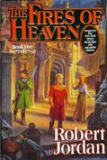

Alphabetical listing of characters encountered in The Fires of Heaven
(Sorted by first name)
|  | Book five in The Wheel of Time by Robert Jordan. |
|---|---|
|
Chronological listing Alphabetical listing by last name Alphabetical listing by first name Back to Wheel of Time characters. |
{kind=link}
A B C D E F G H I J K L M N O P Q R S T U V W X Y Z
- Aan’allein, p. 281 (200)—What the Aiel call Lan. It means “One Man” or “Man Who Is an Entire People,” in the Old Tongue. It refers to his status as the last surviving Malkieri. See Mandragoran, Lan.
- Abelle Pendar, p. 354 (251)—Andoran lord, leader of a strong House that supported Morgase during the Succession. Morgase exiled him from Caemlyn as per Gaebril’s suggestion.
- Adelin, p. 107 (78)—One of the Maidens on guard at Rand’s door, and part of his honor guard.
- Admer Nem, p. 40 (32)—Man whose barn Min, Siuan, Leane, and Logain slept in on their journey through the countryside. He found them, and in the chaos his lantern fell into the hay and the barn burned to the ground. Nem would just as soon have hanged them, had the local lord, Gareth Bryne, not shown up at that moment. See also Nem, Maigan.
- Aeldene Stonebridge, p. 241 (172)—Aes Sedai of the Blue Ajah. She replaced Siuan as as master of the Blue Ajah’s spy network when Siuan was raised Amyrlin (or perhaps replaced the woman who replaced Siuan, or…you get the idea).
- Aemlyn Carand, p. 354 (251)—Andoran lady, leader of a strong House that supported Morgase during the Succession. Morgase exiled her from Caemlyn as per Gaebril’s suggestion.
- Aemon al Caar al Thorin, p. 861 (610)—King of Manetheren during the Trolloc Wars. He died trying to save his city, and the city died shortly thereafter. The site of this battle was called Aemon’s Field, which is where the present-day city of Emond’s Field is located. Aemon’s last names still exist in Emond’s Field: the al’Caars and the al’Thors still live there.
- Aerin, p. (293)—Misspelling of Aeron, one of the Aiel Wise Ones. This mistake was corrected in later editions of the books. See Aeron.
- Aeron, p. 443—One of the Aiel Wise Ones. She is of the Black Water sept of the Nakai Aiel.
- Agelmar Jagad, p. 469 (333)—Lord of Fal Dara, and commander of the King’s army in Shienar. He is one of the best military commanders in the World, in such company as Davram Bashere, Gareth Bryne, Pedron Niall, and Rodel Ituralde.
- Aginor, p. 976 (692)—One of the Forsaken. He was the second one to be released from the sealing on the Bore. He was trapped close to the surface of the Bore, so he was not shielded from the passing of time very effectively; he emerged as a very old man, so old that his face was so wrinkled one could barely make out his features anymore. He was killed by Rand at the Eye of the World.
- Agni Neres, p. 788 (559)—Tall, bony captain of Riverserpent, the boat Elayne and Nynaeve take from Ghealdan to Salidar. He has a narrow face, and his ears stick out.
- King Ailron, p. 208 (148)—King of Amadicia. He is not as strong as most kings due to the control of the Children of the Light. See also Niall, Pedron.
- Aldieb, p. 187 (133)—Moiraine’s white mare.
- Lord Aleshin, p. 620 (439)—Man who thanked Masema profusely for his mercy, just as Lady Baelome did, when he named Rand in Masema’s presence.
- Mistress Alfara, p. 256 (183)—Innkeeper of the Bellon Ford Inn in Amadicia.
- Alliandre Maritha Kigarin, p. 22 (19)—Blessed of the Light, Queen of Ghealdan. She gives her jewelry to Masema so he does not ask for anything more than that from her. She is the fourth person to sit on the throne in six months. See also Ellizelle; Johanin; Teresia.
- High Lady Alteima, p. 67 (49)—High Lady of Tear with black hair. She knows how pretty she is and how to use that fact to get what she wants from men. She comes to see Morgase after fleeing Tear in hope that the Queen will be able to restore her to some of her influence she held in Tear in her new home, Caemlyn. She tried to poison her husband, Tedosian, but did not succeed in killing him. See also Tedosian.
- Aludra, p. 330 (234)—Slender woman who does fireworks for Luca’s menagerie. She was cast out of the Illuminators’ Guild because she was blamed for spoiling the performace for King Galldrian of Cairhien. The problem was actually Tammuz’s fault (or so they thought), but she was a more convenient target. The mishap for Galldrian was actually caused by Rand al’Thor. See also Riatin, Galldrian.
- Alviarin Freidhen, p. 14—Aes Sedai of the White Ajah. Typical of most Whites, she has a very cool, collected personality. She serves as Keeper of the Chronicles under Elaida, despite being of a different Ajah than Elaida was raised from. Elaida was all but forced to choose Alviarin in order to gain the support of the White Ajah when bringing charges against Siuan. Without Alviarin as Keeper, the Sitters for the White Ajah would most likely have been divided over whether to depose Siuan, and only the Red would be behind Elaida. This would most likely have led to the stilling of Elaida and possibly even the dismantling of the Red Ajah. See also a’Roihan, Elaida do Avriny; Keeper of the Chronicles.
- Amaena, p. 42 (33)—Name that Leane adopts while traveling to hide her true identity. See Sharif, Leane.
- Amathera Aelfdene Casmir Lounault, p. 16 (15)—The Panarch of Tarabon. She has vanished, allegedly at Aes Sedai hands, according to Evanellein. In reality, Amathera was being held prisoner by sisters of the Black Ajah under Liandrin and was rescued by Elayne and Nynaeve. They had her keep a low profile for several days so as not to be hurt by the mob outside the Panarch’s Palace: it is not all that far from “The Panarch is dead!” to “Death to the Panarch!”
- Amellia Arene, p. 335 (238)—Jorin’s wife. Like her husband, she is a Darkfriend. See also Arene, Jorin.
- Amondrid Gueyam, p. 729 (518)—Bald, large High Lord of Tear who comes with Meilan to see Rand.
- Amyrlin Seat, p. 13—Leader of the Aes Sedai, appointed for life by the Hall of the Tower. She in theory holds supreme power amongst the sisters, and leads the Hall of the Tower at its meetings. Kings and queens of nations strong and weak will obey a summons from the Amyrlin, even if they spend their entire trip figuring out how they will put a knife in her back while there. The Seat is traditionally held by a woman strong both in the Power and in her character. The vote to choose an Amyrlin must be unanimous, as must the vote to depose one. Once chosen, the Amyrlin is said to be “of all Ajahs and none”—all previous affiliations with Ajah are ignored (at least in theory). The Ajahs have gotten fairly equal numbers of Amyrlins raised from them, with two exceptions: no Amyrlin had been raised from the Red Ajah since Bonwhwin Meraighdin, who was deposed and stilled for nearly breaking the Tower in Artur Hawkwing’s day, until Elaida a’Roihan, the current Amyrlin Seat in Tar Valon; the Blue Ajah has had more than the average number of Amyrlins from its ranks—four of the last five Amyrlins (not counting Elaida) were raised from the Blue Ajah. These two exceptions to the mean number of Amyrlins from one’s Ajah have only added to the friction between the Blue and Red Ajahs over the years. The Amyrlin has a secretary of sorts, the Keeper of the Chronicles, who is traditionally chosen from the same Ajah that the Amyrlin was raised from. The office was held by Siuan Sanche, raised from the Blue Ajah, until she was deposed for her involvement with events surrounding the Dragon Reborn. Her successor was the leader of the coup, Elaida do Avriny a’Roihan, raised from the Red Ajah. See also a’Roihan, Elaida do Avriny; Aryman, Deane; Meraighdin, Bonwhin; Sanche, Siuan; Vayu, Sierin.
- Amys, p. 124 (89)—Wise One of the Nine Valleys sept of the Taardad Aiel. Rhuarc’s wife (one of two). She is one of the Wise Ones that is training Aviendha and Egwene. See also Lian; Rhuarc.
- Anaiya, p. 447 (317)—Aes Sedai of the Blue Ajah with blunt features. She is described as “motherly,” and was good friends with Moiraine. She, like all other Blues, fled Tar Valon when Elaida was raised Amyrlin.
- Andaya Forae, p. 18 (16)—Aes Sedai of the Gray Ajah. A thin, birdlike woman, she is outwardly timid despite Aes Sedai agelessness. This makes her seem unlikely to be a good mediator, but she is in fact one of the best of them. She grew up in Tarabon, and retains a bit of a Taraboner accent. See also Murasaka, Andaya.
- Andaya Murasaka, p. 769 (546)—A member of Valan Luca’s menagerie. Not to be confused with the Aes Sedai of the Gray Ajah. See also Forae, Andaya; Murasaka, Kuan.
- Ander Corl, p. 375 (266)—Maker of the finest boots in Taien. Husband of Aril. See also Corl, Aril ni Nethin.
- King Andric, p. 196 (141)—King of Tarabon. Rumor told the Whitecloaks that he had been supplanted.
- Anselan, p. 418 (297)—Hero of Legend who appears in The Flame, the Blade, and the Heart, a book Egwene is reading. He was a Warder chosen by the Amyrlin Seat of the time for Barashelle. Barashelle had bonded a Warder as an Accepted; this was strictly forbidden, even though she was to be raised to the shawl the next day. She bonded him then to make sure that another Accepted, who was being raised one day earlier than she, did not bond him first. The Amyrlin made her transfer his bond to another woman, and forced her to bond Anselan. Anselan was cold to her, and she spent most of her life trying to make him see her with respect. See also Barashelle.
- High Lord Aracome, p. 729 (518)—Gray, slender High Lord of Tear with a long-smoldering temper. He comes with Meilan and other High Lords to see Rand after the victory over the Shaido.
- Arathelle Renshar, p. 354 (251)—Andoran lady, leader of a strong House that supported Morgase during the Succession. Morgase exiled her from Caemlyn as per Gaebril’s suggestion.
- Areina Nermasiv, p. 802 (569)—A Ghealdanin refugee with steady blue eyes and a bruised face. All she owns are the clothes she wears. She went to Illian to stop her younger brother Gwil from swearing the oath of a Hunter of the Horn; she was too late, and ended up swearing the oaths herself. She still searches for him. She maintains a free tongue, saying exactly what is on her mind. See also Nermasiv, Gwil.
- Aril ni Nethin Corl, p. 375 (266)—Tal Nethin’s younger sister, Ander’s wife. Her two children were kidnapped as alleged gai’shain by the Shaido. Although by Aiel custom those who do not follow ji’e’toh cannot be taken gai’shain, they were taken just the same. See also Corl, Ander; Nethin, Tal.
- Arinvar, p. 467 (331)—Sheriam’s Warder. He grew up in Cairhien, and is short (as most Cairhienin are) and slender. See also Bayanar, Sheriam.
- Artur Hawkwing, p. 19 (17)—Name by which Artur Paendrag Tanreall was known by after his rise to power. See Paendrag Tanreall, Artur.
- Artur Paendrag Tanreall, p. 394 (279)—Young king who rose up out of the chaos surrounding the campaigns of the false Dragon Guaire Amalasan. He dismantled Amalasan’s armies despite having smaller forces to begin with, and created an empire that contained most of the known world. He was ta’veren, possibly the most strongly so in history with the exception of Lews Therin Telamon and Rand al’Thor. Note: it is not known exactly how strongly ta’veren Hawkwing was, and it is difficult to judge the strength of Mat Cauthon and Perrin Aybara because of their proximity to Rand, but it is likely he was stronger than they are, too. Hawkwing even went as far as sending armies across the Aryth Ocean under his son Luthair; contact with these armies was lost at Hawkwing’s death, but their descendants have returned from across the ocean to reclaim the land. They are known as the Seanchan. His death also set off the War of the Hundred Years. Hawkwing is one of the heroes bound to the Horn of Valere; he led them when Mat sounded the Horn at Falme. See also Hawkwing, Artur.
- Arymilla Marne, p. 347 (247)—One of the few people in the Palace that Morgase still recognizes. The brown-eyed noble was forbidden to be on Palace grounds for opposing Morgase during the Succession until Gaebril Compelled Morgase to rescind the order.
- Asmodean, p. 33 (26)—One of the Forsaken. His real name was Joar Addam Nesossin. After a battle with Rand in Rhuidean that nearly destroyed the city, Rand severed Asmodean’s bonds to the Dark One. Rand then coerced him to teach him how to channel more effectively and safely. He was born in Shorelle, a city on a coastline. To allow him to teach Rand but not be strong enough to confront him again, Lanfear made a shield for Asmodean that constricted his access to saidin, making him far weaker than he normally would be. He is not very good with weather-related weaves. See also Natael, Jasin; Nesossin, Joar Addam.
- Asne Zeramene, p. 340 (241)—Aes Sedai of the Black Ajah, formerly of the Green. She has high cheekbones and tilted eyes. She grew up in Saldaea.
- Avar Hachami, p. 832 (590)—One of Myrelle’s three Warders and husbands. He is hawk-nosed, has a squarish chin, and a mustache. See also Berengari, Myrelle.
- Avendesora, p. 80 (59)—The legendary Tree of Life. It is the last surviving Chora tree, and is located in Rhuidean. The Tree was severely damaged when Rand and Asmodean battled over control of the ter’angreal statue and destroyed the shielding on Rhuidean, but it is still alive and will send out shoots again. A cutling of the Tree was given to the people of Cairhien as a sign of goodwill from the Aiel over 500 years ago. That Tree, Avendoraldera, grew in the center of the city of Cairhien until King Laman Damodred cut it down to make a throne out of the wood. Laman’s Sin (as it is now called) brought four Aiel clans over the Spine of the World to kill Laman for killing the Tree. See also Avendoraldera; Damodred, Laman.
- Avendoraldera, p. 378 (267)—A chora tree, cut from Avendesora, the legendary Tree of Life, which was given as a gift to the people of Cairhien from the Aiel. The Cairhienin never knew exactly why the Aiel gave them such a gift, and almost five hundred years later it was almost forgotten that it was a gift from them. The tree, which grew in the center of the city of Cairhien, was cut down by King Laman Damodred twenty years ago, which precipitated the Aiel War. Four clans of the Aiel crossed the Dragonwall under the leadership of Janduin, Rand’s father and chief of the Taardad Aiel, to punish Laman for his sin. The deep respect the Aiel held for the Cairhienin, as well as the passage through the Waste they were allowed, was terminated after Laman’s Sin—the Aiel now refer to all Cairhienin as “treekillers,” and think nothing of killing or mistreating them. See also Avendesora; Damodred, Laman.
- Avi Shendar, p. 220 (157)—Old man from Mardecin whom Ronde Macura uses to send her reports to Tar Valon. He usually sends copies of her messages to someone else without her knowledge. See also Macura, Ronde.
- Avienda, p. 747 (531)—This is one of the easily forgivable typos in the book. See Aviendha.
- Aviendha,
p. 123 (89)—Aiel of the Nine Valleys sept of the Taardad Aiel. Formerly a
Maiden of the Spear, she was forced to give up the spear to become a
Wise One because she had the ability to channel inborn. She is good
friends with Egwene, Elayne, and
Nynaeve, whom she met when Nynaeve saved her spear-sister
during their search for He Who Comes With the Dawn.
She has a begrudging friendship with Rand as well.
She has green eyes, and is of age with Rand and
Mat. She is more than pretty with dark, reddish
hair. Editor’s note: the Glossary lists Aviendha’s sept as the
Bitter Water sept, indicating she has changed back to that sept
again.
See also
al’Thor, Rand;
Niella;
Trakand, Elayne.
B
- Ba’alzamon, p. 285 (204)—In the Trolloc Tongue, “Heart of the Dark.” It is believed to be the Trolloc name for the Dark One. His real identity was one of the Forsaken, Ishamael. He was killed by Rand in the Stone of Tear. See Ishamael; Shai’tan.
- Bael, p. 81 (60)—Clan chief of the Goshien Aiel. He is the tallest man Rand has ever met, almost a head taller than Rand, who is not short. He has deep, resonant voice. See also Dorindha; Melaine.
- Lady Baelome, p. 620 (438)—A noble Masema almost beheaded for calling Rand by his name. He only let her off with a flogging because she got down and grovelled when she found out he was serious.
- Bair, p. 124 (89)—Wise One of the Haido sept of the Shaarad Aiel. She is a Dreamwalker, and one of Egwene’s teachers. She has been married before, but her husbands are dead.
- Balthamel, p. 976 (692)—One of the Forsaken. He was the first of the Forsaken to be released from the sealing on the Bore. He was trapped very close to the surface of the Bore, and thus not shielded very effectively from the passage of time; he emerged so deformed by age that he had to hide his face behind a cloth and was unable to speak. He was killed by the Green Man at the Eye of the World.
- Bar Dowtry, p. 514 (364)—A young man from Emond’s Field. He and Kimry Lewin were caught by Nynaeve in his father’s hayloft doing something they should not have been doing before they were married. Kimry was 21 years old at the time; her mother was not pleased, and neither Kimry nor Bar could sit for their first week of marriage. The Women’s Circle decided that a month was the shortest possible period of engagement, and the two barely got by a few minutes without another strapping of some kind until the month was up.
- Lord Baran, p. 498 (353)—Lord of Tear. He died in the fight against the Aiel with a spear through his abdomen.
- Barashelle, p. 418 (287)—Hero of Legend who appears in The Flame, the Blade, and the Heart, a book Egwene is reading. Although it is never mentioned in the stories, Birgitte remembers that she bonded a Warder while still one of the Accepted, the day before being raised Aes Sedai. When it was found out, the current Amyrlin Seat forced her to transfer her bond to another woman, forbade her to take the tests for several years, sent her to scrub pots for a very long time, and when she finally did receive the shawl, she bonded her to Anselan. Several years later, Birgitte was unsure of which one of them gave the commands. See also Anselan.
- Bari, p. 330 (234)—Juggler in Luca’s menagerie. Kin’s brother. See also Kin.
- Barim Halle, p. 64 (48)—Man who served Bryne as Senior Squadman years ago. Hard and wiry with a “leather egg” for a head and white, bushy eyebrows.
- Barit Chavana, p. 330 (234)—Acrobat from the Sea Folk who works for Luca. His skin is darker than Juilin’s, and he has Sea Folk tattoos on his hands. See also Chavana, Taeric.
- Bartu, p. 603 (426)—One of Uno’s soldiers. He is one of only two that actually listen to Masema’s talk.
- Basel Gill, p. 359 (254)—Innkeeper of The Queen’s Blessing, an inn in Caemlyn. Rand and Mat stayed there while they passed through Caemlyn waiting for Moiraine and the rest of the group. It is also the inn where Morgase goes to take refuge from Gaebril. Gill is a loyal Queen’s man, and is willing to do whatever he can for the rightful Queen of Andor.
- Be’lal, p. 976 (692)—One of the Forsaken. He was killed by Moiraine in the Stone of Tear, just before Rand took Callandor. Since he was destroyed by balefire, he is completely dead—not even the Dark One himself can bring him back.
- Bela, p. 60 (45)—Siuan’s white horse. She originally belonged to Tam al’Thor, who used her as his workhorse in the sheep pasture. Egwene rode her from Emond’s Field to Tar Valon as well. She is quite gentle, but Siuan treats her as a vicious beast that cannot be trusted.
- Beonin Marinye, p. 453 (322)—Aes Sedai of the Gray Ajah. She grew up in Tarabon. She is pretty and has dark honey-colored hair and grayish blue eyes. She makes Morvrin seem gullible, even though she always seems to have a look of wide-eyed startlement on her face.
- Bera Harkin, p. 466 (331)—Aes Sedai of the Green Ajah. She has three Warders. She was sent, along with Kiruna, to establish diplomatic relations with Rand in the Aiel Waste.
- Berelain sur Paendrag Paeron, p. 276 (196)—First of Mayene. Her sign is a white hawk. She is fond of revealing attire, and also has an eye out for Perrin. She is presumably the hawk in Min’s viewing; the falcon is obviously Faile.
- Lady Berewin, p. 868 (615)—A woman Aviendha dragged out of Rand’s bedchamber by the hair when she caught her trying to sneak in.
- Beron Goraed, p. 624 (441)—Teresia’s new husband. Alliandre’s troops essentially forced him to marry her.
- Berylla Naron, p. 343 (243)—Aes Sedai of the Black Ajah, openly of the Blue prior to leaving the Tower with Liandrin. Very skinny, she is good at plotting and manipulating others.
- Birgitte, p. 271 (193)—A Hero of Legend bound to the Horn of Valere. She is an archer, and is always linked to Gaidal Cain in the stories. She violates the precepts of Tel’aran’rhiod to help Nynaeve and Elayne fight the Shadow. She has blue eyes and golden hair, and carries a silver bow and silver arrows with which she never misses. Other than that, she is nothing like the stories of her. See also Cain, Gaidal; Maerion.
- Bonwhin Meraighdin, p. 19 (17)—Amyrlin Seat during the life of Artur Hawkwing, approximately one thousand years ago. She was raised from the Red Ajah, the last Amyrlin besides Elaida from the Red. She tried to use the Tower’s influence to manipulate Hawkwing and make him a puppet ruler of the White Tower. This ended in disaster, as Hawkwing laid seige to Tar Valon and attempted to destroy the Aes Sedai stronghold—he nearly succeeded. Bonwhin was stripped of stole and staff and stilled for nearly destroying the Tower, and since then no Amyrlin from her Ajah had been raised until Elaida. She was succeeded by Deane Aryman of the Blue Ajah, who attempted to undo the damage Bonwhin did to the Tower’s reputation, and succeeded for the most part. Unfortunately, this created extreme tension between the Red and Blue Ajahs that still exists today, and is the main reason why the Red Ajah will (and did) take any pretext to pull down an Amyrlin raised from the Blue Ajah. See also Amyrlin Seat; Aryman, Deane; Paendrag Tanreall, Artur.
- Brandelwyn (Bran) al’Vere, p. 435 (309)—Innkeeper of the Winespring Inn and Mayor of Emond’s Field. He is Egwene’s father. See also al’Vere, Egwene; al’Vere, Marin.
- Breane Taborwin, p. 363 (257)—Woman who fled Cairhien’s civil war and ended up in Caemlyn. She accompanies Tallanvor to help Morgase. See also Dorn, Lamgwin; Taborwin, Dobraine.
- Bruan, p. 82 (60)—Chief of the Nakai Aiel. He is big and strong, enough for two blacksmiths. He seems almost lazy by his voice and gray eyes, but even Rhuarc considers him to be a deadly fighter and a devious tactician.
- Brugh Chavana,
p. 424 (301)—One of
the people in Valan Luca’s menagerie.
C
- Cail, p. 652 (463)—One of Kin Tovere’s apprentices. He is about a year older than Rand.
- Calle Coplin, p. 760 (540)—A woman from the Two Rivers that Nynaeve thinks is like Birgitte. She knew every merchant’s guard by his first name, and kept no secrets from any of them.
- Car’a’carn, p. 81 (59)—According to the Prophecy of Rhuidean, the man destined to unite the clans of the Aiel. The term means “Chief of Chiefs” in the Old Tongue. See also al’Thor, Rand; Coramoor; Dragon Reborn; He Who Comes With the Dawn.
- Cara, p. 67 (50)—Andoran woman who serves as High Lady Alteima’s handmaid while she is in Caemlyn.
- Caralin, p. 50 (38)—A resident on Gareth Bryne’s estate. She served as the bailiff, in a way, at Mara, Amaena, and Serenla’s trial.
- Carlinya, p. 446 (317)—Aes Sedai of the White Ajah with pale skin. She fled the White Tower when Siuan was deposed. Min had a viewing of her with a raven in it. Siuan remembers her as a novice and as one of the Accepted—once a month, Carlinya committed some minor offense, a small thing that earned an extra hour or two of chores, nothing more, but she never understood why the other novices and Accepted considered her to be an Aes Sedai pet anyway. Siuan thinks that sums up who Carlinya is: a great deal of logic and not much common sense.
- Cerandin, p. 330 (234)—A woman who tends boar-horses (that is, elephants) for Valan Luca’s menagerie. She calls the animals s’redit. She is allegedly from Shara, where the animals came from, but in reality she and the animals were left behind when the Seanchan fled Falme.
- Chaena, p. 601 (425)—One of Uno’s soldiers. He thought Nynaeve could skin and butcher a boar at fifty paces with the sharpness of her tongue.
- Chalinda, p. 57 (43)—Name Siuan suggests Min to use in the next village instead of Serenla. It means “Sweet Girl” in the Old Tongue. See also Farshaw, Elmindreda; Min, Serenla.
- Chesmal Emry, p. 208 (149)—Aes Sedai of the Black Ajah, formerly of the Yellow. She is tall and handsome with dark hair and eyes. She grew up in Ghealdan. She was one of the most Talented Healers in years; she now uses her Talent for torture.
- Chin Akima, p. 581 (412)—An operator of a menagerie in Amadicia and Ghealdan who competes with Valan Luca. He has a man who juggles swords and axes and nine acrobats.
- Cian, p. 920 (652)—Fat woman from Siuan’s youth who stopped her from fighting when she was twelve.
- Clarine Anhill, p. 329 (234)—Wife of Petra. Plump and brown-cheeked, she trains dogs for Luca’s menagerie. See also Anhill, Petra.
- Colavaere Saighan, p. 720 (511)—Lady of Cairhien.
- Coramoor, p. 983 (697)—According to the Jendai Prophecy of the Atha’an Miere, the man who will take the Sea Folk from the sea. Since these prophecies are almost identical in most parts to the Prophecies of the Dragon, it is likely that Rand al’Thor is the Coramoor as well. See also al’Thor, Rand; Dragon, The; Dragon Reborn; He Who Comes With the Dawn.
- Corianin Nedeal, p. 284 (203)—Last Dreamer in the White Tower; an Aes Sedai of the Brown Ajah. She died almost 400 years ago. Almost all of the ter’angreal the Black Ajah stole from the Tower were last studied by her; they allow partial access to Tel’aran’rhiod, the World of Dreams.
- Corin Ayellin, p. 941 (667)—Woman from Emond’s Field who is good at making plum puddings. Nynaeve stole one from her on a dare from Nela Thane when she was sixteen; Corin beat her soundly for it.
- Corman, p. 111 (80)—Aiel who suggests that Mat call it a night when it gets too dark to throw knives. Mat says it’s plenty bright, that his aging grandmother could throw knives in that light, and that he could do it blindfolded. He has a white scar on his nose.
- Couladin, p. 84 (62)—Self-appointed acting chief of the Shaido Aiel. He claimed to be He Who Comes With the Dawn after Asmodean placed copies of Rand’s dragons on his arms. When it was shown that he was a fake, Couladin took the Shaido west to raid towns along the Spine of the World and attempt to take Cairhien. His clan is disliked at best by all of the others, but all the chiefs agree that even the Shaido should have a real chief, not Couladin. See also Car’a’carn; He Who Comes With the Dawn.
- Cowinde, p. 135 (97)—The gai’shain who comes to escort Egwene to the sweat tent. She serves as Egwene’s personal gai’shain while she is among the Aiel.
- The Creator, p. 29 (24)—Creator of the Universe, people, places, things, the True Source, everything in existence. An alternate name would be God. After He created the world, the Creator made a prison for Shai’tan, the Dark One, His complete opposite in every way, to keep him from influencing the world. The Creator is bent on non-interference—He will not directly influence events in the world, instead using a “Chosen One” or simply tugging at the Pattern of the Age in hopes that what He wants to occur will occur, instead of just making it happen. The Forsaken and most Darkfriends consider Him to be inferior to the Dark One, despite the fact that He imprisoned him. See also Dragon, The; Dragon Reborn; Shai’tan.
- Croi Makin, p. 832 (590)—One of Myrelle’s three Warders and husbands. He is young, and has blond hair. See also Berengari, Myrelle.
- Culan Cuhan,
p. 713 (506)—Person
(or possibly an entire city) who wept on the day
Tel Janin Aellinsar
became the Destroyer of Hope. The name was part
of the memory that Rand had in his head from
Lews Therin Telamon.
D
- Daerid, p. 688 (488)—Cairhienin commander of the pikemen Mat uses to make a “porcupine” to protect the Tairen troops.
- Dagdara Finchey, p. 836 (593)—Aes Sedai of the Yellow Ajah. She has wide shoulders and is quite tall. She is very skilled at Healing; she left the Tower when Elaida took over.
- Dalyn, p. 42 (33)—Name used by Logain while traveling to avoid misunderstanding about his true name. See Ablar, Logain; Amalasan, Guaire.
- Danelle, p. 14 (13)—Aes Sedai of the Brown Ajah, the only Brown sister among Elaida’s group of followers and advisors that deposed Siuan. She is the typical Brown, often slight and seemingly lost in her own thoughts. She has big blue eyes.
- Daricain Annallin, p. 497 (352)—Cairhienin lieutenant who comes with Edorion to meet Rand outside Cairhien. His con is squares of red and black. He is pale and slender with a narrow face and a long nose.
- Dark One, p. 23 (20)—Name, used in every land, for Shai’tan. See Shai’tan.
- Daughter of the Nine Moons, p. 118 (85)—Woman whom Mat is destined to marry, according to the Aelfinn. She is most likely Tuon, the heir to the Seanchan throne, since their royal assembly is called the Court of the Nine Moons.
- Daughter-Heir (of Andor), p. 18 (16)—By Andoran tradition, the oldest daughter of the Queen succeeds her on the Lion Throne. No man is allowed to be King, at least not as more than a figurehead. The previous Daughter-Heir, Tigraine, disappeared over twenty years ago; the current Daughter-Heir is Elayne Trakand. It is also traditional for the Daughter-Heir and her oldest brother (who will become First Prince of the Sword when she becomes Queen) to train in Tar Valon, but Elayne is the first Daughter Heir, indeed, the first ruler of any kind in recent memory, to actually have enough ability to channel that she will become Aes Sedai. The position of Daughter-Heir is somewhat in jeopardy at present: Tar Valon has lost track of Elayne, the Queen of Andor has fled the country and is presumed dead by her citizens, and Elayne has no daughters to be her heirs if she does take the throne. See also Mantear, Tigraine; Trakand, Elayne.
- Davian, p. 974 (691)—False Dragon of old times. Ba’alzamon claimed that he was used by Aes Sedai, just as all other false Dragons were. See also Dragon Reborn.
- Davram t’Ghaline Bashere, p. 14—Lord of Bashere, Tyr, and Sidonia; Guardian of the Blightborder; Defender of the Heartland; Marshal-General to Queen Tenobia of Saldaea; and her uncle. He is also Faile’s father. He is one of the best military commanders in the World, in such company as Gareth Bryne, Agelmar Jagad, Pedron Niall, and Rodel Ituralde. See also t'Aybara, Faile ni Bashere; Bashere, Zarine.
- Deane Aryman, p. 242 (173)—Aes Sedai of the Blue Ajah about 1000 years ago. She was raised to the Amyrlin Seat after Bonwhin was deposed. She was born in Salidar and effectively saved the Tower from almost certain doom due to Bonwhin’s actions. See also Amyrlin Seat; Meraighdin, Bonwhin.
- Demandred, p. 32 (26)—One of the Forsaken. He seems to think he is all but heir to the Dark One. Very arrogant and proud, Demandred went over to the Shadow out of envy for Lews Therin Telamon.
- Dhearic, p. 82 (60)—Chief of the Reyn Aiel. He is heavier-set than Rhuarc and has a prominent nose. His golden hair is streaked with paler strands.
- Dobraine Taborwin, p. 720 (511)—A Lord of Cairhien. See also Taborwin, Breane.
- Dorindha, p. 150 (107)—Wife of Bael. Melaine requested the other Wise Ones to ask her if she would accept Melaine as a sister-wife; she accepted, and Bael then had little choice but to marry Melaine as well. See also Bael; Melaine.
- The Dragon, p. 9—The name by which Lews Therin Telamon was known during the War of the Shadow. See also al’Thor, Rand; Dragon Reborn; Telamon, Lews Therin.
- Dragon Reborn, p. 23 (20)—According to the Karaethon Cycle, the man who is the Rebirth of Lews Therin Telamon, the Dragon. He is prophesied to fight the Dark One in Tarmon Gai’don, the Last Battle—it is said that he will save the World, and Break it again. See also Ablar, Logain; al’Thor, Rand; Amalasan, Guaire; Car’a’carn; Coramoor; Darksbane, Raolin; Davian; Dragon, The; He Who Comes With the Dawn; Stonebow, Yurian; Taim, Mazrim; Telamon, Lews Therin.
- Lord Dulain, p. 479 (339)—Border lord in Murandy who the Tower thought could truly unify Murandy, with a little guidance from the Aes Sedai. He is the reason Siuan and Elaida ordered Gareth Bryne not to use the Queen’s Guards to keep raids along Andor’s border in check; they did not want one of Bryne’s guards to kill him and ruin all of their plans. Unfortunately, Dulain was killed by a farmer before he could unify anything.
- Dunsinin, p. 418 (297)—Hero of Legend who appears in The Flame, the Blade, and the Heart, a book Egwene is reading.
- Duranda Tharne,
p. 237 (168)—One of the eyes-and-ears for the Blue Ajah.
Siuan approaches her in an effort to find out where
the Blue sisters are gathering.
E
- Eamon Valda, p. 310 (220)—Officer in the Children of the Light. He commands the troops that are near Tar Valon, and gave Galad the information on the Whitecloaks when he said he was curious. Once Galad joined the Whitecloak army, Valda promoted him quickly because of his swordsmanship skills, claiming that he deserved recognition for them regardless of where he obtained them.
- Easar Togita, p. 811 (575)—King of Shienar, lord of Fal Moran.
- Edesina Azzedin, p. 451 (320)—Aes Sedai of the Yellow Ajah. She fled the White Tower when Siuan was deposed. Min had a viewing of her indicating that she will escape an a’dam.
- Edorion Selorna, p. 497 (352)—Plump, pink-cheeked Tairen Lord who played cards with Mat. He always reacted to his cards in the same way, as if he had been dealt all low single cards, but he won just as often as anyone else (except Mat). He rode out to meet Rand near Cairhien.
- Egwene al’Vere, p. 89 (65)—A young woman from Emond’s Field, now one of the Accepted. She has considerable potential with the One Power, and will most likely be one of the strongest Aes Sedai in over a thousand years. It is also thought that she may be the first Dreamer in the Tower in almost 500 years; she is currently in training with the Wise Ones to learn more of this Talent. Egwene is good friends with Elayne Trakand, the Daughter-Heir of Andor, and is also a childhood friend of Rand al’Thor, the Dragon Reborn. In fact, Rand and Egwene were all but Promised in their youth, but both of them feels an almost sibling-like love for each other now; they know that they cannot get married, and don’t really want to. Egwene is the love object of both of Elayne’s brothers, Galad and Gawyn—she is flattered by Galad’s attentions, but she does not return them; she does find Gawyn to her liking. See also al’Thor, Rand; al’Vere, Brandelwyn; al’Vere, Marin; Damodred, Galadedrid; Trakand, Elayne; Trakand, Gawyn.
- Elaida do Avriny a’Roihan, p. 13—Aes Sedai formerly of the Red Ajah, now raised to the Amyrlin Seat. She is one of the strongest in the One Power among the Aes Sedai alive. Elaida was the advisor to Queen Morgase of Andor prior to her dismissal after Elayne’s dissappearance, after which she led the coup that deposed Siuan Sanche and Leane Sharif. She sometimes has the Foretelling, one of the last living Aes Sedai with any significant strength with the Talent; in fact, one of her first Foretellings concerned the importance of the Royal Family of Andor in the fight against the Shadow. She had this Foretelling while she was still one of the Accepted, during the time after Tigraine disappeared and threw Andor into its third war of Succession—Elaida attached herself to Morgase as soon as it became apparent that she would be the one who would take the Throne. Elaida is very strong in the One Power—only Siuan (before she was stilled), Moiraine, Egwene, Elayne, Nynaeve, and a few others are stronger. As a Red, Elaida is suspicious of all sisters of the Brown, Green, and Yellow Ajahs, and hates members of the Blue. She does not believe she will be able to trust a Blue ever again, and the stole she wears as Amyrlin Seat lacks a blue stripe. Elaida was not powerful enough to demand a Keeper of the Chronicles from her own Ajah, instead elevating Alviarin, of the White Ajah, to the post. See also Amyrlin Seat; Damodred, Moiraine; Freidhen, Alviarin; Sanche, Siuan; Trakand, Morgase.
- Elayne Traemane, p. 354 (251)—Ellorien’s grandmother. Morgase named her daughter after her. See also Traemane, Ellorien; Trakand, Elayne.
- Elayne Trakand, p. 18 (16)—The Daughter-Heir to the Throne of Andor, the only daughter of Queen Morgase and Taringail Damodred. She is the sister of Gawyn and half-sister of Galad. She is now one of the Accepted, and has considerable potential in the One Power. Her sign is a golden lily. She has reddish-blond, curly hair. She lived next door to Egwene al’Vere as a novice, and the two are very good friends. She is currently travelling with fellow Accepted Nynaeve al’Meara and two escorts sent to watch the two of them, Thom Merrilin and Juilin Sandar, after being sentt to hunt the Black Ajah by the now-deposed Amyrlin Seat, Siuan Sanche—Elayne volunteered for the task after Siuan sent Egwene and Nynaeve to the task, they being two people Siuan knew, for certain, were not Darkfriends. Elayne is one of three women who is destined to fall in love with Rand al’Thor, the Dragon Reborn, according to a viewing that Min Farshaw told her about. The other two women are Min herself and Aviendha. Elayne is not crazy about the notion of “sharing” Rand, but it would appear she does not have much choice. See also al’Thor, Rand; Damodred, Galadedrid; Damodred, Taringail; Traemane, Elayne; Trakand, Gawyn; Trakand, Morgase.
- Eldrith Jhondar, p. 338 (240)—Aes Sedai of the Black Ajah, formerly of the Brown. She often looks distracted, as many Browns do.
- Lord Elegar, p. 29 (24)—Minor noble in Andor whom Rahvin is using to extract information about things. He is a Darkfriend.
- Elenia Sarand, p. 347 (247)—Shrewish, honey-haired wife of Jarid. She is the High Seat of House Sarand in Andor. During the Succession, her House opposed Morgase, intending Elenia herself for the Throne. She was only allowed into the Palace for State occasions until Gaebril Compelled Morgase to rescind her exile. See also Sarand, Jarid.
- Queen Ellizelle, p. 623 (441)—Queen of Ghealdan after after Johanin died. She tried to put down Masema’s gatherings but failed. She died by drinking poison afterward. She was succeeded by Teresia. See also Johanin; Kigarin, Alliandre Maritha; Teresia.
- Ellorien Traemane, p. 354 (251)—Andoran lady, leader of a strong House that supported Morgase during the Succession, and one of Morgase’s best friends. Morgase exiled her from Caemlyn as per Gaebril’s suggestion; when Ellorien demanded to know why, Morgase had her flogged. Elayne was named after her grandmother.
- Elmindreda (Min) Farshaw, p. 40 (32)—A young woman from Baerlon. She has a special ability that few besides herself know about: she sees images and auras around people, especially around Aes Sedai and Warders, that foretell their futures. Min does not always know what these viewings mean, but when she does, it will happen; it is only a question of how and when. Min was fascinated by the number of images she saw around Rand, especially the one she saw that included herself: three different women are destined to fall in love with him, one of which is herself. She usually dresses in attire reserved for men; this habit was picked up when growing up with her father, who was a miner. She worked in the Tower so Siuan Sanche could have her and her viewings close by; she eventually helped Siuan and Leane get free from their cell as well. See also Chalinda; Min, Serenla.
- Emara, p. 842 (596)—One of the Accepted. She and Faolain bothered Siuan and Leane because they had been stilled; they were both severely punished.
- The Empress (of Seanchan), p. 426 (302)—Ruler of Seanchan and presider over the Court of the Nine Moons. Her successor and daughter is sometimes called the Daughter of the Nine Moons. See also Daughter of the Nine Moons.
- Enaila, p. 107 (78)—Red-haired Maiden on guard at Rand’s door. She is short for an Aiel, no taller than Egwene. Her height is a touchy subject. She is one of the three worst at treating Rand as a long-lost son. See also Lamelle; Somara.
- Erim, p. 83 (61)—Clan chief of the Chareen Aiel. He has red hair, half of which is white, and bright green eyes.
- High Lady Estanda, p. 74 (54)—High Lady of Tear who works with Tedosian to kill Alteima, or so Alteima thinks. See also Alteima; Tedosian.
- Estean Andiama, p. 497 (352)—Son of High Lord Torean of Tear. He used to play cards with Mat in Tear. He came out to meet Rand near Cairhien. His face looks like a potato. See also Andiama, Torean.
- Evanellein, p. 16 (15)—Aes Sedai of the Gray Ajah, and a member of Elaida’s inner circle. She is very concerned with her appearance, at least for a Gray.
- Evon,
p. 336 (238)—Cook on Jorin and Amellia
Arene’s manor. He is fat and has “piggy eyes,” according to
Liandrin.
F
- Faile ni Bashere t'Aybara, p. 300 (214)—Perrin’s wife. Her real name is Zarine Bashere; she assumed the name Faile upon becoming a Hunter of the Horn. She has long dark hair and dark eyes. Zarine is the daughter of Davram Bashere, the Marshal-General of Saldaea and Queen Tenobia’s uncle (making Faile Tenobia’s cousin). She left home to become a Hunter when her father sent her younger brother off to fight while keeping her home; she finally decided she’d had enough of being at home and went to Illian. While on her quest to hunt for the Horn, she encountered Moiraine, Lan, and Perrin when they were persuing Rand to Tear. She was shocked to find out that the Horn of Valere had already been used, much less found, and even more surprised that Rand was the Dragon Reborn. When she found this information out, Moiraine forbade her to leave them, since if she did she could upset the balance of the world by telling the wrong person that the Dragon was Reborn. Faile eventually developed feelings for Perrin, feelings which he found he returned, and the two were married in Emond’s Field shortly before the Trolloc threat was secured. See also Aybara, Perrin; Bashere, Davram t’Ghaline; Kazadi, Tenobia si Bashere.
- Falion Bhoda, p. 343 (243)—Aes Sedai of the Black Ajah, formerly of the White. She once fled the Tower as a Novice.
- Faolain Orande, p. 451 (320)—Dark, curly-haired Accepted. She has an extreme dislike for wilders, and does not treat Siuan and Leane, who were stilled, very well either. She spent eight years as a novice, and five so far among the Accepted.
- Panarch Farede, p. 965 (685)—Panarch of Tarabon near the end of the War of the Hundred Years. She was responsible for promulgating the calendar that now bears her name, which measures years of the New Era (NE), the first of which marked the (arbitrary) end of the War.
- Father of Lies, p. 973 (690)—Alternative name for the Dark One. See Shai’tan.
- Feran,
p. 414 (294)—Aiel man. His greatfather is Sorilea’s sister-son.
Sorilea plans to set him up with Aviendha, since
it appears that Rand and Aviendha will not marry
(she does not understand that Aviendha does not want to love him for
fear of hurting Elayne). He is Seia Doon,
a Black Eye. The Black Eyes have vowed not to sleep beneath roof or
tent until one of their own, Couladin, is dead.
He looks like Rhuarc, but younger, taller, and
more handsome. He also has redder hair. He has been trying to attract
Enaila’s interest for the last year, but she is not
interested. Aviendha thinks he laughs like a braying mule and picks at
his ears—suffice it to say she is not interested, either.
G
- Lord Gaebril, p. 18 (17)—Advisor to Queen Morgase of Andor, and her latest love interest. She seems completely besotted with him, at least to the outside observer. Gaebril arrived in Caemlyn just as riots sprang up throughout the city, and he joined and led one of the factions. His faction restored order in the city, and upon Morgase’s return from Tar Valon, he gave her her kingdom in one piece, as it was when she left. Allegedly, she was so happy that he had done this that she sent Elaida, her Aes Sedai advisor, away and made Gaebril her advisor. However, during Mat’s trip through Caemlyn to deliver Elayne’s letter, he overheard Gaebril ordering someone to kill Elayne and anyone else with her—he tried to find a way to report this information to Morgase, but ended up telling Elayne when he found out it was Gaebril whom he had overheard. Gaebril is actually Rahvin, one of the Forsaken. He has been Compelling Morgase to obey him, though he has noticed that she is less pliable than he expected—as if her mind seeks a way out of the Compulsion despite not knowing it is trapped. See also Rahvin; Trakand, Morgase.
- Gaidal Cain, p. 271 (193)—Hero of Legend bound to the Horn of Valere. He is a swordsman, and is always linked to Birgitte in the stories. Unlike his depiction in the stories (which say he is as handsome as Birgitte is beautiful), Gaidal Cain is one of the ugliest men that Nynaeve has ever seen. Just being around him makes Nynaeve uncomfortable. See also Birgitte.
- Galadedrid (Galad) Damodred, p. 18 (16)—Son of Morgase’s late husband Taringail Damodred and his first wife Tigraine. He is half-brother to Elayne and Gawyn. Stunningly handsome, even Nynaeve has trouble blushing when she speaks to him, and Aes Sedai will often forsake their work to watch him practice (shirtless) in the sword yard. Galad has much skill with the sword, and has acheived Blademaster status in practice if not in name. He disappeared from Tar Valon during the violence that accompanied Siuan’s deposition and joined Eamon Valda’s band of the Children of the Light. Because of his sword skill, Galad was promoted to an official position very quickly, and now controls his own small band of men. He says he became a Whitecloak because it “felt right.” He is extremely virtuous, and will do whatever he thinks is right regardless of who it hurts, even himself. His sign is a winged silver sword, point down. See also Damodred, Taringail; Mantear, Tigraine; Trakand, Elayne; Trakand, Gawyn; Trakand, Morgase.
- Galldrian Riatin, p. 654 (464)—Late king of Cairhien. He assumed the throne after House Damodred lost the throne in the Aiel War because of Laman’s Sin. His death precipitated the civil war in Cairhien; all of the nobles fought with each other over Galldrian’s kingdom, and ended up destroying it in the process. See also Damodred, Laman.
- Garan, p. 108 (78)—Aiel of the Black Rock sept of the Goshien Aiel. He has served one year as gai’shain to the Shaarad Clan, and as soon as he puts off the white will be married to Joinde of the Black Rock Shaarad. Marriages are common among men and women taken gai’shain and members of the clan they serve, but very seldom occur between two clans in blood feud. The fact that theirs will occur is no doubt due to the presence of Rand al’Thor, whose chance-twisting effects of being ta’veren twist seldom occurences into everyday events. See also Joinde.
- Gareth Bryne, p. 46 (35)—Former First Prince of the Sword and Captain of the Queen’s Guards under Queen Morgase in Andor. He was appointed to the position because Morgase had no living male relatives and served for many years. He was recently exiled from Caemlyn on a suggestion from Morgase’s new advisor, Lord Gaebril. He now lives on his private estates in rural Andor, where he presided over the trial of three young women who unintentionally burned a barn: Mara Tomanes, Amaena, and Serenla. When these three made an oath to serve him and then apparently broke it, he followed them out of sheer curiosity. See also Farshaw, Elmindreda; Sanche, Siuan; Sharif, Leane; Trakand, Morgase.
- Gawyn Trakand, p. 19 (17)—Son of Queen Morgase of Andor and brother of Elayne. He will become First Prince of the Sword when Elayne becomes Queen. He and his half-brother Galad went to train with the Warders in the White Tower, as all sons of Andoran queens have for centuries, and both now possess considerable skill with the sword. During the chaos that erupted after Siuan Sanche’s deposition, Gawyn formed a band of young men, everyone who had trained with the Warders except Galad, who are called the Younglings. The Younglings fought back against their teachers, who were trying to free Siuan and Leane from their imprisonment. Gawyn himself killed Hammar and Coulin, the men in charge of teaching the sword and for his personal training, respectively, both of which are Blademasters—few Warders are as good as they were, and Gawyn managed to kill both of them. Gawyn did not know which party to support—he believes that anyone who opposes Tower Law by trying to free Siuan and Leane is wrong, but at the same time he does not know all the facts surrounding the change in leadership. In fact, his sister Elayne and her friends Nynaeve al’Meara and Egwene al’Vere side with those who broke from the Tower. This is especially difficult since Gawyn has feelings for Egwene, feelings which she returns. However, he is afraid to speak up because Galad has similar feelings. His sign is a white boar. See also Damodred, Galadedrid; Damodred, Taringail; Trakand, Elayne; Trakand, Morgase.
- Gitara Moroso, p. 465 (330)—Former advisor to Queen Mordrellen of Andor, and later Keeper of the Chronicles until her death about twenty years ago. When she had the Foretelling, it was strong. One of her Foretellings was to tell Tigraine that she must become a Maiden of the Spear, or dire consequences would result; as it turned out, Tigraine needed to become Shaiel, the Maiden of the Spear who bore a son by Janduin that grew up to be Rand al’Thor, the Dragon Reborn. Her other extremely significant Foretelling occured at the moment of her own death: in front of the Amyrlin and two Accepted named Moiraine Damodred and Siuan Sanche, she felt the birth of the Dragon Reborn. She slumped over into Moiraine’s arms, dead, after the words were out of her mouth. See also Damodred, Moiraine; Keeper of the Chronicles; Mantear, Mordrellen; Sanche, Siuan.
- Graendal, p. 32 (26)—One of the Forsaken. She collects handsome men and woman to use as servants. Physical beauty is not enough for Graendal; her servants must also have had political power before becoming her servants. She is extremely beautiful in comparison to any woman except Lanfear. She has “sun-colored” hair.
- Grassburner, p. 973 (690)—Alternative name for the Dark One, especially popular among the Aiel. See Shai’tan.
- Great Lord of the Dark, p. 32 (26)—Name used by Darkfriends and the Forsaken for Shai’tan, claiming that to use his true name would be blasphemy. See Shai’tan.
- Guaire, p. 42 (33)—Name Logain wanted to adopt while traveling. Remembering that the name Guaire might attract unwanted attention due to association with Guaire Amalasan, Siuan convinced him that it was a fool’s choice. See also Ablar, Logain; Amalasan, Guaire; Dalyn.
- Guaire Amalasan, p. 974 (691)—False Dragon of centuries past, from Free Years 939–943. He started the War of the Second Dragon, during which a young king named Artur Paendrag Tanreall rose to overwhelming prominence and power. Siuan Sanche recommends gentling Mazrim Taim to avoid another episode like that when Amalasan was being gentled. See also Dragon Reborn; Paendrag Tanreall, Artur.
- Gwil Nermasiv, p. 803 (570)—Areina’s brother. He is a Hunter of the Horn. See also Nermasiv, Areina.
- Gyldin,
p. 338 (239)—Servant to the Black Ajah in Tanchico. Moghedien
assumes her identity to infiltrate the Black sisters’ gathering.
H
- Hadnan Kadere, p. 78 (57)—Merchant who is absorbed into the group moving through the Waste from Rhuidean. He is a Darkfriend, and came into the Waste with two odd traveling companions, Keille Shaogi and Jasin Natael. He is a dark, bulky man from Saldaea. See also Isendre; Natael, Jasin; Shaogi, Keille.
- Han, p. 82 (60)—White-haired clan chief of the Tomanelle Aiel. He is considered quite short for an Aiel, which is average to tall for most people.
- He Who Comes With the Dawn, p. 76 (56)—According to the Aiel’s Prophecy of Rhuidean, the man who will unite the clans of the Aiel and bring them out of the Three-Fold Land. With him, a “remnant of a remnant” will survive the Last Battle; without him, every Aiel alive will die. He Who Comes With the Dawn is said to come at dawn from Rhuidean, marked with two Dragons instead of one. See also al’Thor, Rand; Car’a’carn; Coramoor; Couladin; Dragon Reborn.
- High Lord Hearne, p. 746 (530)—A High Lord of Tear. He has a habit of pulling on his ear when he is angry.
- Heartfang, p. 973 (690)—What the wolves call the Dark One, though they also use it for Ba’alzamon. The name is also used by humans for the Dark One. See Shai’tan.
- Heartsbane, p. 973 (690)—Alternative name for the Dark One. See Shai’tan.
- Heirn, p. 650 (461)—Sept chief of the Jindo Sept of the Taardad Aiel.
- Herid, p. 884 (626)—One of Kadere’s men; he fell halfway through the twisted doorway ter’angreal in Rhuidean when he was trying to move it. He was the first of Kadere’s Darkfriend companions to leave.
- Hyran,
p. 801 (569)—Late
fiancé of Nicola Treehill. He went off to
follow the Prophet, believing it his
duty—duty is very important to him—and got his head split
with an axe.
See also
Treehill, Nicola.
I
- Ilyena Sunhair, p. 933 (661)—Name used for Ilyena Therin Moerelle, wife of Lews Therin Telamon, referring to her reddish-blond hair. See Ilyena Therin Moerelle.
- Ilyena Therin Moerelle, p. 98 (71)—Wife of Lews Therin Telamon during the Age of Legends and the War of the Shadow. She has light hair similar in color to Elayne and Aviendha. According to the memories of Lews Therin’s that flash through Rand’s head, Ilyena never flashed her temper at Lews Therin when she got angry at herself. See also Sunhair, Ilyena; Telamon, Lews Therin.
- Indirian, p. 84 (62)—Clan chief of the Codarra Aiel, a clan which has been losing many spears to the Bleakness. He is undecided as to whether to follow Rand or not.
- Isendre, p. 115 (83)—A woman who came into the Waste with Kadere’s wagon team. Very flirtatious, she uses her physical attractiveness to lure men into telling her things they wouldn’t otherwise say. She is a Darkfriend. Mat thinks he might like it if a group of women like her guarded him as tightly as the Maidens guard Rand.
- Ishamael, p. 32 (26)—One of the Forsaken. He was never really bound inside the Bore, and led the hidden forces of the Shadow for the three thousand odd years from the end of the War of the Shadow to the present. He took credit for such things as convincing the then insane Lews Therin Telamon to kill everyone he loved, pursuading the dying Artur Hawkwing to refuse the Aes Sedai Healing that might have saved his life, and many other events in history that turned out poorly. When the rest of the Forsaken were freed, Ishamael kept them away from one another’s throats. He confronted Rand at the Eye of the World where he was severed from the Dark One’s bonds; he confronted him again at Falme, where Rand melted his sword when he put it through him, but not after Ishamael gave Rand a wound that he has not been able to recover from yet; and he confronted Rand in the Stone of Tear after he took Callandor, after which Rand killed him by plunging Callandor into his heart. His body rotted quickly, but it was proof that Ba’alzamon, which he called himself to the public, was a human being, and not the Dark One. See also Ba’alzamon; Shai’tan.
- Ispan Shefar,
p. 343 (243)—Aes
Sedai of the Black Ajah with dark hair. She grew up in
Tarabon, and was originally of the Blue Ajah.
J
- Jak o’ the Mists, p. 440 (312)—Something that Logain thinks is pointless to chase, and what Siuan must be chasing. It is probably the Ghealdanin equivalent to Jak o’ the Wisps, and may resemble a wild goose.
- Jak o’ the Shadows, p. 109 (79)—Person or thing that men want to dance to in a song Mat is fond of singing, “Dance with Jak o’ the Shadows.” It is thought that Jak o’ the Shadows is death.
- Jalindin, p. 523 (371)—Severe, dark-eyed Seeker for the Truth that Rand and Aviendha capture in Seanchan.
- Janduin, p. 142 (102)—Rand’s biological father, an Aiel of the Iron Mountain sept of the Taardad Aiel. He was the youngest clan chief of the Taardad Aiel in memory. He ended the blood feud between the Taardad and Nakai clans after over 200 years of fighting, and then allied not only with the Nakai, but with the Reyn Aiel as well (who were not much better than blood enemies before the alliance was made). He almost ended the blood feud between the Shaarad and Goshein clans (which still persists today), and would have if King Laman would not have cut down Avendoraldera. He loved Shaiel, to the point where he could not refuse to let her fight in the Aiel War despite being with child. It was Janduin himself who led the four clans; Taardad, Nakai, Reyn, and Shaarad; across the Spine of the World to punish Laman for his Sin, throwing the entire World into war and allowing Prophecy to be fulfilled. See also al’Thor, Rand; Mantear, Tigraine.
- Janwin, p. 84 (61)—Chief of the Shiande Aiel.
- Jar Silvin, p. 251 (179)—One of Gareth Bryne’s soldiers. He has gray hair, but is younger than Thad.
- Jarid Sarand, p. 347 (247)—One of the few people in the Palace that Morgase still recognizes. He is dark and square-faced. During the Succession, Jared’s House opposed Morgase; he was only allowed into the Palace on state occasions until Gaebril tricked Morgase into rescinding his exile from the Palace. See also Sarand, Elenia.
- Jaril, p. 821 (582)—One of Marigan’s sons. See also Marigan.
- Jasin Natael, p. 91 (66)—Gleeman/bard to the Dragon Reborn and his teacher. He has dark hair, and is taller than most non-Aiel men. He came into the Waste with Hadnan Kadere’s wagons. He is actually Asmodean, but Rand dares not reveal even a hint of his true identity to anyone for fear that they will kill him for what he is, even though he is the only man who can teach Rand to channel. See also Asmodean; Nesossin, Joar Addam.
- Javindhra Doraille, p. 15—Aes Sedai of the Red Ajah. She has smooth cheeks but a hard face and harsh voice. She is a Sitter for the Red Ajah.
- Jeade’en, p. 182 (130)—Rand’s dappled stallion. He named the horse after Jain Farstrider’s horse.
- Jeaine Caide, p. 336 (239)—Aes Sedai of the Black Ajah, formerly of the Green. She grew up in Arad Doman. She has coppery skin and a swan-like neck, and is fond of thin, clinging dresses. This figure and taste is similar to how Leane acts, dresses, and looks, and is typical of a Domani woman. When in Tanchico, Jeaine tried to kill Nynaeve with the ter’angreal that produces balefire. Liandrin refuses to believe that she even saw Nynaeve there, much less attacked her.
- Jenric, p. 111 (80)—Aiel who is throwing knives with Mat and Corman. He is surprised that Mat talks the way he does if it is not to impress women. He is built like a bear, and thinks himself witty.
- Mistress Jharen, p. 264 (188)—Plump innkeeper of The Light of Truth, an inn at which Elayne and Nynaeve stop. She has long, gray curls; a warm smile; and searching, dark eyes.
- Jheran, p. 81 (60)—Brown haired clan chief of the Shaarad Aiel. He and Bael tend to say the same thing about many subjects, which makes the two of them uneasy because their clans are in blood feud.
- Jini, p. 522 (370)—A damane Rand and Aviendha tried to free while in Seanchan.
- Joar Addam Nesossin, p. 727 (516)—Real name of Asmodean. See also Asmodean; Natael, Jasin.
- King Johanin, p. 623 (441)—King of Ghealdan when Masema started gathering followers. He considered Masema to be a harmless madman and did nothing about it, against his advisors’ advice. He died in an alleged hunting accident, although Uno claimed that unless Johanin did not know one end of a boar spear from another, he was killed by the nobles who told him to put the group down. He was succeeded by Ellizelle. See also Ellizelle; Kigarin, Alliandre Maritha; Teresia.
- Joinde, p. 108 (78)—Maiden who once stood guard at Rand’s door. She just gave up the spear to marry Garan of the Jhirad sept of the Goshien Aiel. He was her gai’shain for a year beforehand. She is of the Black Rock sept of the Shaarad Aiel; the Shaarad and the Goshien were blood enemies at the time they married. See also Garan.
- Jol, p. 652 (463)—One of Kin Tovere’s apprentices. He is about two years older than Rand.
- Jolien, p. 379 (268)—A Maiden of the Spear. She is part of Rand’s honor guard.
- Joline Maza, p. 15 (14)—Aes Sedai of the Green Ajah. She is fond of revealing, clinging dresses. She is the only Green among those who deposed Siuan Sanche, who now advise Elaida.
- Joni Shagrin, p. 53 (40)—Man who will escort Mara, Amaena, and Serenla to Bryne’s manor. He is wide-bodied and balding. He was also the man who escorted the three from the shed they were being detained in. When Bryne was still Captain of the Queen’s Guards, Joni was Senior Bannerman.
- Jorin Arene, p. 334 (237)—Man who owns the estate in Amadicia where Liandrin and her Black sisters are staying. He is a merchant who was doing quite well until essentially all trade in Tarabon ground to a halt. His and his wife are both Darkfriends. See also Arene, Amellia.
- Juilin Sandar, p. 192 (137)—Thief-taker from Tear, one of the best at his craft. He accompanies Nynaeve and Elayne on their travels because Lan asked him to. He accepted partly out of respect for Lan, and partly out of guilt; he betrayed Elayne, Egwene, and Nynaeve to the Black Ajah when Liandrin used Compulsion on him, and later realized how wrong it was.
- Juranai,
p. 650 (461)—Slender leader of the Aethan Dor, the Red Shields.
He has streaks of white in his pale brown hair.
K
- Karind Anshar, p. 348 (247)—Woman whom Morgase recognizes at the Palace. Her stare allegedly put three husbands under the soil. She was banished from the Palace grounds except for state occasions for opposing Morgase during the Third War of Andoran Succession, during which Morgase came to power. Gaebril invited her back to weaken Morgase’s power.
- Keeper of the Chronicles, p. 14—Essentially the secretary to the Amyrlin Seat. The Keeper is traditionally chosen from the same Ajah the Amyrlin was raised from, and wears a stole of the color of her Ajah instead of the striped stole of the Amyrlin. The post was held by Leane Sharif of the Blue Ajah until a coup deposed Siuan Sanche and stilled both Siuan and Leane. Her successor was Alviarin Freidhen of the White Ajah, despite the fact that Siuan’s successor was from the Red. See also Amyrlin Seat; Freidhen, Alviarin; Moroso, Gitara; Sharif, Leane.
- Keille Shaogi, p. 487 (345)—Kadere’s business partner when he ventured into the Waste. She was actually Lanfear disguised as a fat woman. See also Eronaile, Mierin; Lanfear.
- Kimry Lewin, p. 514 (364)—A young woman from Emond’s Field. She and Bar Dowtry were caught by Nynaeve in Bar’s father’s hayloft doing something they should not have been doing before they were married. She was 21 years old at the time; her mother was not pleased, and neither Kimry nor Bar could sit for their first week of marriage. The Women’s Circle decided that a month was the shortest possible period of engagement, and the two barely got by a few minutes without another strapping of some kind until the month was up.
- Kin, p. 330 (234)—Juggler in Luca’s menagerie. Bari’s brother. See also Bari.
- Kin Tovere, p. 645 (458)—Lens maker from Cairhien. He makes a telescope for Rand complete with tower so he can see the whole city from a safe distance away.
- Kinslayer, p. 974 (691)—Name given to Lews Therin Telamon after he killed his family in his madness. See Telamon, Lews Therin.
- Kirukan, p. 787 (558)—Soldier-queen during the Trolloc Wars. Thom tells her story—in High Chant, of course—after the skirmish in Somara with a mob consisting of followers of the Prophet. Birgitte claims she had a temper like a boar caught in briars at best.
- Kiruna Nachiman, p. 452 (321)—Aes Sedai of the Green Ajah. She is an elegant, statuesque woman. She is a sister to the King of Arafel. She has four Warders, who she accompanied, along with Bera and her three Warders, to establish diplomatic relations with Rand in the Aiel Waste.
- Kuan Murasaka,
p. 769 (546)—A member of Valan Luca’s menagerie.
See also
Murasaka, Andaya.
L
- Laman Damodred, p. 378 (267)—King of Cairhien twenty years ago. His cutting of Avendoraldera to make a throne unlike anything the world had ever seen precipitated the Aiel War. The war continued for years until all nations united against the Aiel and even Tar Valon was threatened; the war finally ended when the Aiel killed Laman and took his sword. Because of Laman’s Pride, and his Sin, House Damodred lost the throne of Cairhien to House Riatin, and the city never again reached any of its former glory—but it also allowed Prophecy to be fulfilled: the Dragon Reborn was able to be born on the slopes of Dragonmount, born of a Maiden of the Spear but raised by the blood of the old nations. See also Avendesora; Avendoraldera; Damodred, Moiraine; Damodred, Taringail; Janduin.
- Lamelle, p. 733 (520)—A Maiden of the Spear. She is lean, with a strong jaw and dark red hair, and is about twenty years older than Rand. She was one of the three worst at treating Rand as a long-lost son. She cannot cook at all, but she insists on making Rand soup anyway. See also Enaila; Somara.
- Lamgwin Dorn, p. 363 (257)—Man who accompanies Tallanvor to The Queen’s Blessing to assist the Queen. He is one of the die-hard Queen’s men.
- al’Lan Mandragoran, p. 78 (58)—The uncrowned king of Malkier, and Warder to Moiraine. He is quite tall, and does not get very emotional—in fact, he has “emotional walls” that he has been building for years. His country, Malkier, was overrun by Trollocs shortly after he was born, and is now corrupted by the Great Blight. Lan, the last of his people, then proceeded to fight a one-man war against the Shadow by killing Shadowspawn in the Blight. He fought Aiel during the Aiel War, and achieved Blademaster status. He was eventually bonded by Moiraine, which ended his lonely fight (or at least changed its style). When Lan and Moiraine brought Rand, Mat, Perrin, Egwene, and Nynaeve out of their home in the Two Rivers, he found that there was something which could throw his guard down, but he was the last to notice it: love for Nynaeve. As Moiraine put it, Nynaeve was able to plant vines in Lan’s emotional walls and break them down without him even knowing they were there. He loves her very much, whether he admits it openly or not, and Nynaeve, to her surprise and his, loves him in return. See also Aan’allein; al’Meara, Nynaeve; Damodred, Moiraine.
- Lanfear, p. 30 (24)—One of the Forsaken. Her name means “Daughter of the Night” in the Old Tongue; unlike the rest of the Forsaken, she chose the name herself. She was the second strongest of the Forsaken (after Ishamael). Before she turned to the Shadow, before Lews Therin Telamon met Ilyena (whom Lanfear despises), she was his lover. She now plans to reclaim “her” man, Rand, even though he is a different person…. She is as beautiful as Rahvin is handsome, and even Graendal just looks pretty next to her. She has dark eyes and dark hair. See also Eronaile, Mierin; Shaogi, Keille.
- Laras, p. 42 (33)—Mistress of the Kitchens in the White Tower. She gave Min a makeup kit that she kept meaning to throw away but never did. Instead, Leane used it.
- Latelle Luca, p. 329 (234)—Woman with a stern face and dark eyes that performs with bears with Luca’s menagerie. She is Valan Luca’s wife. See also Luca, Valan.
- Latrelle, p. 333 (236)—Misspelling of Latelle’s name. See Luca, Latelle.
- Leafblighter, p. 973 (690)—Alternative name for the Dark One, especially popular among the Ogier. See Shai’tan.
- Leane Sharif, p. 41 (32)—Woman from Arad Doman with coppery skin. Just as her family members were training her in the seductive ways of Domani women, Leane found that her life would take a different direction: she could channel saidar, and would do so with or without teaching. She became an Aes Sedai, a member of the Blue Ajah, and was eventually raised to Keeper of the Chronicles under Siuan Sanche. During the coup led by Elaida a’Roihan and Alviarin Freidhen that deposed Siuan, Leane was thrown in the dungeon and stilled. Leane has turned to her seductive side to try to replace what she lost in stilling; she is out of practice, but does well enough. See also Amaena; Freidhen, Alviarin; Keeper of the Chronicles; Resara; Sanche, Siuan.
- Mistress Lewin, p. 514 (364)—A woman from Emond’s Field. Her daughter Kimry was found, by Nynaeve, with Bar Dowtry in his father’s hayloft performing certain actions which they should not have been doing before marrying. Kimry was 21 at the time, and was considered an adult. Mistress Lewin was still not impressed; by the time she was was done with them, neither Kimry nor Bar could sit for a week. See also Dowtry, Bar; Lewin, Kimry.
- Lews Therin Telamon, p. 33 (27)—The Dragon, Breaker of the World. He was perhaps the greatest man who ever lived, and the most powerful Aes Sedai in recorded history. During the War of the Shadow, he lead the forces of the Light against the Forsaken, and led the final stroke which re-sealed the Dark One back into his prison. Unfortunately, during this stroke he was driven insane by the Dark One’s touch, eventually killing his wife Ilyena, his children, and everyone he loved, as well as anyone who carried a drop of his blood. For this act, people remember him with a new name: Kinslayer. After he had done this, Ishamael gave him his sanity back long enough for him to realize what he had done; Lews Therin killed himself by drawing on saidin too heavily, causing a mountain to form on the spot where he stood. This mountain is called Dragonmount, and is near the present-day city of Tar Valon. It is unfortunate that the name of one of the greatest men to ever live is now synonymous with evil, for Lews Therin killed his family due to the Dark One’s influence, but without Lews Therin there may not have been a world left in which to kill them. Lews Therin’s voice sometimes speaks inside Rand’s head, offering advice or sobbing over lost women, but is getting more and more vocal. See also al’Thor, Rand; Dragon, The; Ilyena Therin Moerelle.
- Lian, p. 969 (688)—Mother-sister to Aviendha, sister-wife to Amys, wife of Rhuarc. She is the roofmistress of Cold Rocks Hold. See also Amys; Rhuarc.
- Liandrin, p. 205 (146)—Aes Sedai of the Black Ajah, formerly of the Red. She has light hair and a face like a doll. She grew up in Tarabon. She led the group of thirteen Aes Sedai who declared themselves Black Ajah and fled the White Tower, murdering guards and even sisters in the process. Liandrin was Red Ajah before turning to the Black, but her oath as a Darkfriend was sworn before she came to the Tower, so it cannot really be said that she was ever Red Ajah at all.
- Lini Eltring, p. 210 (150)—Childhood nurse to Maighdin, Morgase, and Elayne Trakand. She has many wise sayings, which Elayne and Morgase are fond of quoting to themselves and others (probably because they have been ingrained into their minds so much). See also Trakand, Elayne; Trakand, Maighdin; Trakand, Morgase.
- Lir Baryn, p. 348 (247)—A “whip of a man” who always wears a sword. He was one of the nobles who opposed Morgase during the Succession; he was invited back to the Palace by Gaebril.
- Logain Ablar, p. 40 (32)—False Dragon who created war in Ghealdan and surrounding nations before being captured and gentled by the Red Ajah. He got loose during the chaos surrounding the deposing of Siuan Sanche, and eventually was escorted out of Tar Valon by Siuan and her traveling companions. Before he was gentled he was of considerable strength, and attracted quite a following of loyal soldiers. Min still has viewings of him with a halo over his head, which she thinks indicates that he will become a figure of great power sometime in the future. See also Dalyn; Dragon Reborn; Guaire.
- Lord of the Grave, p. 973 (690)—Alternative name for the Dark One. See Shai’tan.
- Luan Norwelyn, p. 354 (251)—Andoran lord, leader of a strong House that supported Morgase during the Succession. Morgase exiled him from Caemlyn as per Gaebril’s suggestion.
- Luci,
p. 214 (153)—Dark-haired
assistant to Ronde Macura.
See also
Macura, Ronde.
M
- Mabriam en Shereed, p. 118 (85)—Woman who founded the Compact of the Ten Nations after the Breaking of the World. She was ta’veren.
- Machan, p. 467 (332)—One of the Warders in Salidar. The sister he is bonded to was not given.
- King Maecine, p. 394 (279)—Man beside whom Mat fought in a past life. He was the King of Eharon, one of the Ten Nations, about 400–500 years before the Trolloc Wars. This memory is the earliest of Mat’s memories; he remembers nothing from before Maecine’s time, and nothing after Artur Hawkwing.
- Maerion, p. 585 (414)—Name Birgitte gives to Luca—even though he wants to use her real name despite not really knowing who she is, she used another name to avoid the beacon to Moghedien. Birgitte claims she was known by Maerion in one of her previous incarnations. See also Birgitte.
- Maigan Nem, p. 48 (37)—Wife of Admer. She wants to whip Mara, Amaena, and Serenla dearly for burning her husband’s barn. See also Nem, Admer.
- Maighdin Trakand, p. 351 (249)—Mother of Morgase and grandmother of Elayne. She was quite beautiful (according to Morgase). See also Trakand, Elayne; Trakand, Morgase.
- Maira, p. 409 (290)—Red-haired Maiden of the Spear, of the Serai Sept of the Tomanelle Aiel. She explains what the Maidens’ dolls mean to Egwene, but only reluctantly. She is at least as old as Adelin.
- Mairin Gome, p. 600 (424)—Operator of another menagerie in competition with Valan Luca’s show. Since Luca’s “boar horses” could be seen above the canvas when they reared, she raised her high-wire act above her tent wall to attract a similar audience.
- Mandarb, p. 188 (134)—Lan’s black stallion. His name means “blade” in the Old Tongue.
- Mandelain, p. 84 (62)—Chief of the Daryne Aiel, a clan which has been losing many spears to the Bleakness. He is undecided as to whether he should follow Rand or not.
- Mangin, p. 497 (351)—Aiel of the Jindo Sept of the Taardad Aiel. He was with the Aiel who came to Tear. He has a sense of humor much like Mat’s.
- Mara Tomanes, p. 42 (33)—A woman that Siuan Sanche knew as a child. Siuan adopts her name to use while traveling so as not to reveal her true identity. See Sanche, Siuan.
- High Lord Maraconn, p. 746 (530)—A blue-eyed High Lord of Tear.
- Marigan, p. 802 (569)—Once plump woman who fled Ghealdan. She has two sons, ages six and seven. She dealt in cures and herbs in Samara. Her husband has been dead for five years. See also Jaril; Moghedien; Seve.
- Marillin Gemalphin, p. 224 (160)—Aes Sedai of the Black Ajah, formerly of the Brown. She is quite fond of cats, and is rarely seen without one.
- Marin al’Vere, p. 436 (310)—Egwene’s mother, Bran’s wife. See also al’Vere, Brandelwyn; al’Vere, Egwene.
- Lord Maringil, p. 720 (511)—A Lord of Cairhien. He is slender and tall for a Cairhienin, and has white hair nearly to his shoulders.
- Martyn Tallanvor, p. 68 (51)—Guardsman-Lieutenant in the Queens Guards in Andor. He is fiercely loyal to Morgase, and when Gaebril made the guards swear a new oath, he swore it only so long as it took before he could re-swear the old one, which was to serve the Queen, not the Law. He bears no liking for Gaebril, and tries to convince Morgase to leave him. He seems to love his queen not only as a queen, but as a woman—he is very passionate about serving his queen.
- Masema Dagar, p. 603 (426)—The Prophet. He was once one of Uno’s underlings, and the one who respected Rand the least, but after he found out that Rand was the Dragon Reborn, he went his own way, preaching of Rand’s glory as the “Lord Dragon Reborn.” See also Prophet of the Dragon, The.
- Masin Caeren, p. (247)—Misspelling of Nasin Caeren, Andoran noble. This mistake has been fixed in later editions. See Caeren, Nasin.
- Mathena, p. 760 (540)—Woman Birgitte knew long ago that she thinks was like Nynaeve. She looked down her nose at men, and even executed a man when he chanced upon her when she was swimming naked. She was never kissed until Zheres stole one from her; after he did, it was as if she had discovered men for the first time. He eventually had to move to a home in the mountains to escape her. See also Zheres.
- Matrim (Mat) Cauthon, p. 98 (71)—A young man from Emond’s Field. He is ta’veren. Along with his good friends, Rand al’Thor and Perrin Aybara, he left home to escape the Trolloc attack on Winternight. On the way to Tar Valon, he picked up a dagger from Shadar Logoth tainted with the evil that destroyed Aridhol, which he carried with him for a long time. He was separated from the dagger by Aes Sedai Healing, but doing so caused large gaps in his memory sequence. These gaps were filled and more when he passed through the twisted door to the land of the Eelfinn, where he was granted his three requests: a foxhead medallion that protected him from women’s channeling, a way out of the land of the Eelfinn, and the memories of past lifetimes that were the gaps in his memory. Mat’s ta’veren qualities manifest themselves particularly well with random events, such as dice games—he almost never loses a toss of the dice, even if the dice are weighted. He has found that battles are the ultimate form of gambling, and along with his newfound memories he can win almost every battle he fights quite decisively. He has four sisters, including Eldrin and Bodewhin, who are 16 and 17, respectively. His father Abell is one of the best archers in the Two Rivers, possibly in the World. Mat has gotten in the habit of carrying concealed knives under his clothes in case he is attacked—his collection would surprise anyone. In the Waste, he met a woman named Melindhra, a Maiden of the Spear from the Shaido Clan. However, she is not the Daughter of the Nine Moons, who Mat is destined to marry according to the Aelfinn. He has a scar along his neck from where the Eelfinn tried to kill him; this was also in accordance with what the Aelfinn told him, that he is “to die and live again.” See also al’Meara, Nynaeve; al’Thor, Rand; al’Vere, Egwene; Aybara, Perrin; Daughter of the Nine Moons; Melindhra; Trakand, Elayne.
- Mattin Stepaneos den Balgar, p. 648 (460)—King of Illian. Since Sammael sits on the Council of Nine, which holds most of the power in Illian, he is essentially a figurehead position at this point.
- Mazrim Taim, p. 14—False Dragon who wreaked havoc in Saldaea before being captured by Aes Sedai. He later escaped his captors, possibly with Black Ajah assistance. It is believed that Davram Bashere may have dispatched his army to look for Taim. Taim is very strong in the One Power, almost as strong as Rand. See also Dragon Reborn.
- Meane sol Ahelle, p. 964 (684)—Historian-poet of the Fourth Age who composed “Glory of the Dragon.”
- Meciar, p. 913 (647)—Aiel who reports to Rand that someone fell off his Skimming platform. He is Cor Darei, a Night Spear. He wears the red headband of the Siswai’aman, Spears of the Dragon.
- Meilan Mendiana, p. 499 (353)—High Lord of Tear who commands Tear’s armies in Cairhien.
- Melaine, p. 124 (89)—Aiel Wise One of the Jhirad sept of the Goshien Aiel. She is a Dreamwalker, and one of Egwene’s teachers. She can channel. She has waist-length red-gold hair and green eyes. See also Bael; Dorindha.
- Melanril Asegora, p. 685 (487)—Tairen lord in command of the troops Mat redirects just before the Shaido descend upon them.
- Melindhra, p. 114 (82)—Aiel of the Jumai sept of the Shaido Aiel. A Maiden of the Spear. She is tall even for an Aiel woman, about two inches taller than Mat. She has blond hair and blue eyes. She was very impressed by Mat’s knife-throwing skills.
- Melisinde, p. 419 (298)—Hero of Legend who appears in The Flame, the Blade, and the Heart, a book Egwene is reading.
- Memara, p. 16 (15)—Aes Sedai of the Red Ajah. Alviarin suggests her as an advisor to Queen Tenobia during the crisis with Mazrim Taim.
- Mendao, p. 636 (451)—Shienaran soldier who got into a duel with three Hunters of the Horn and lost to at least one of them….
- Mer, p. 332 (235)—Bull s’redit that Cerandin trains.
- Meresin Daganred, p. 497 (352)—Cairhienin lieutenant who comes with Edorion to meet Rand outside Cairhien. His con is wavy vertical lines of red and white. He is pale and slender with a narrow face and a long nose. He is slightly heavier-set than Daricain.
- Mesaana, p. 976 (693)—One of the Forsaken. Her whereabouts and activities are unknown.
- Mierin Eronaile, p. 172 (123)—Real name of Lanfear that she was called during the Age of Legends. Rand recalls it via Lews Therin’s memories that seep into his thoughts. Like the Forsaken she became, Mierin was ever power-hungry; she loved Lews Therin because he was powerful, not because she loved him, and even unwittingly bored into the Dark One’s prison searching for more power. See also Lanfear; Telamon, Lews Therin.
- Mist, p. 178 (128)—Egwene’s horse.
- Mistress of Novices, p. 25 (21)—Aes Sedai in charge of novice training in the White Tower. She serves as both a disciplinarian and a shoulder to cry on for girls who need either. The current Mistress of Novices is Silviana Brehon of the Red Ajah in the White Tower. See also Bayanar, Sheriam; Brehon, Silviana.
- Moghedien, p. 31 (25)—One of the Forsaken. Her name is that of a spider that lived during the Age of Legends—those spiders spun webs in non-obvious places, and their bites killed in seconds. She always attacks from safety, if at all possible. While Moghedien was in Tanchico, she was bettered in a proverbial wrestling match (with saidar instead of muscles) by Nynaeve al’Meara. She managed to escape only because Nynaeve did not know that tied off shields could be defeated, and vows to have revenge.
- Moiraine Damodred, p. 23 (20)—Aes Sedai of the Blue Ajah. Born of a noble House in Cairhien, she is Taringail Damodred’s youngest half-sister, and King Laman’s niece. She is considered short among her people, and the Cairhienin are already a short people. When it was discovered that she had the ability to channel inborn, Moiraine went to Tar Valon to become an Aes Sedai. Just before being raised to the shawl, she and her friend Siuan Sanche witnessed Gitara Moroso’s Foretelling of the Rebirth of the Dragon. Moiraine and Siuan walked away from each other and did not speak to each other again (at least in public), but both held secret communication with each other and dedicated their lives to finding and guiding the Dragon Reborn. Moiraine found the young man she sought on Winternight in Emond’s Field, a young man named Rand al’Thor, and also found two more ta’veren, Mat Cauthon and Perrin Aybara. She also found two women with the spark of the Power inborn, Egwene al’Vere and Nynaeve al’Meara, who she brought out of Emond’s Field as well. When Moiraine was shortly raised to the shawl, she met Lan Mandragoran, the uncrowned King of Malkier, who was fighting alone against the Shadow in the Blight and the Borderlands; she asked Lan to become her Warder, and he accepted. She is very strong in the Power. See also Damodred, Taringail; Mandragoran, Lan; Moroso, Gitara; Sanche, Siuan.
- Moonflower, p. 60 (45)—Leane’s gray mare.
- Mordeth, p. 27 (22)—Man who, during the Trolloc Wars, came to power in the city of Aridhol. He had the idea to use evil as a weapon against evil, and eventually drove the Trollocs away from the city. Unfortunately, the city and its inhabitants were so consumed by evil that the entire city is still tainted with the evil that destroyed Aridhol. The city is now known as Shadar Logoth, “Where the Shadow Waits.” Mordeth’s soul remained in Shadar Logoth for millenia—he could not leave the city unless he accompanied a person to the city walls or had them carry something from the city to the outside world. Strangely enough, both of these things happened at the same time, when Mat Cauthon carried the ruby-handled dagger from the city while Padan Fain accompanied Mordeth out of the city at about the same time. Mordeth attempted to consume Fain’s soul while the dagger tried to consume Mat’s. In Fain’s case, the attempt to consume his soul was not completely successful—instead, the two souls merged to create something more evil than either Mordeth or Fain alone. See also Fain, Padan; Ordeith.
- Mordrellen Mantear, p. 356 (252)—By the Grace of the Light, Queen of Andor, Defender of the Realm, etc. before Morgase. Her death and the previous disappearance of her daughter Tigraine set off the Succession, called the Third War of Andoran Succession by those not from Andor. Note: there was also a queen of Andor named Modrellein, who reigned approximately 700 years ago. Mordrellen’s name is misspelled as “Modrellein” in early editions of the books, but this is fixed in later editions. See also Damodred, Taringail; Mantear, Tigraine; Trakand, Morgase.
- Morelin Samared, p. 256 (183)—Name that Elayne uses when traveling to protect her true identity. See also Nana; Trakand, Elayne.
- Morgase Trakand, p. 18 (16)—By the Grace of the Light, Queen of Andor, Defender of the Realm, Protector of the People, High Seat of House Trakand. She is the mother of Elayne and Gawyn. She married Taringail Damodred, a prince of Cairhien, Elayne and Gawyn’s father; he died when they were young. She has since gone through several lovers, including Thomdril Merrilin, a former court-bard; Gareth Bryne, her First Prince of the Sword and Captain of the Guards; and most recently Lord Gaebril, a man who led the faction that stilled the riots in Caemlyn that sprang up on Morgase’s trip to Tar Valon to inquire about Elayne’s whereabouts. Thom was exiled from the city of Caemlyn when he started telling her what he really thought of some of her plans, her relationship with Bryne ebbed away until finally Gaebril told her to exile him too, and Gaebril seems to be usurping her power. The Daughter-Heir of Andor is traditionally trained by Aes Sedai in the White Tower, and Morgase underwent novice training to keep the tradition alive. She was given the gift of a Great Serpent ring despite not being Accepted, and still wears it on her left hand. She was previously advised by Elaida do Avriny a’Roihan of the Red Ajah, who is now the Amyrlin Seat. Morgase is now attempting to assert a claim to the throne of Cairhien as well. See also a’Roihan, Elaida do Avriny; Damodred, Galadedrid; Damodred, Taringail; Trakand, Elayne; Trakand, Gawyn.
- Lady Morsa, p. 522 (370)—A Seanchan noble that Rand and Aviendha capture in Seanchan.
- Morvrin, p. 453 (322)—Stout Aes Sedai of the Brown Ajah. She is skeptical of everything, and always maintains a placid look. She has gray streaks in her hair. Siuan thinks she would demand six pieces of evidence before she believed you if you told her fish had scales.
- Muelin, p. 639 (453)—A contortionist that Luca hires. She came from another show that was destroyed by a mob. The crowd was stirred by either The Prophet’s men or Whitecloaks, who declared that the show contained a woman who wore the shawl of an Aes Sedai.
- Myrelle Berengari,
p. 447 (317)—Aes Sedai of the Green Ajah with an elliptical face and dark
eyes. She is noted for her fiery temper, even among Greens. She keeps
three Warders, and keeps each of them as a husband in defiance of all law
and custom, inside the Tower and outside it. She fled Tar Valon when
Siuan was deposed, along with most of her Ajah.
See also
Dromand, Nuhel;
Hachami, Avar;
Makin, Croi.
N
- N’Delia Basolaine, p. 9—Translator of a fragment of the Prophecies of the Dragon who lived circa 400 A.B. (After the Breaking). She was First Maid and Swordfast to Raidhen of Hol Cuchone. See also Raidhen of Hol Cuchone.
- Naean Arawn, p. 348 (247)—Andoran noble that sneers a lot. Morgase forbade her to enter the Palace because she opposed her during the War of Succession; she wanted the Lion Throne for herself. Gaebril invited her back in an effort to weaken Morgase’s power.
- Nalesean Aldiaya, p. 704 (500)—Second man to command the Tairen cavalry after the death of Melanril. He is square-faced and blocky.
- Nana, p. 256 (183)—Name that Nynaeve uses while traveling to protect her true identity. She acts as maid to Morelin. See also al’Meara, Nynaeve; Samared, Morelin.
- Nangu, p. 601 (425)—One of Uno’s soldiers. He thought Nynaeve could skin and butcher a boar at fifty paces with the sharpness of her tongue.
- Narenwin Barda, p. 224 (160)—Aes Sedai of the Yellow Ajah to whom Ronde Macura sends her reports. She is slender and shy—it is easy to forget that she is there. One day a week, she lets children bring their pets to the Tower grounds for her to Heal. See also Macura, Ronde.
- Nasin Caeren, p. 348—Bony, goat-faced, white-haired Andoran noble, one of the only people in the Palace Morgase knows. He has a habit of chasing women, and was forbidden to be on Palace grounds because he opposed Morgase during the Succession until Gaebril invited him back.
- Nela Thane, p. 941 (667)—A young woman from Emond’s Field. When Nynaeve was sixteen, Nela dared her to steal plum puddings from Corin Ayellin; Nynaeve got caught.
- Nengar, p. 603 (426)—One of Uno’s soldiers. He is one of only two that actually listen to Masema’s talk.
- Nerein, p. 419 (298)—Hero of Legend who appears in The Flame, the Blade, and the Heart, a book Egwene is reading.
- Nerin, p. 332 (235)—Calf s’redit that Cerandin trains. She is not Sanit’s calf.
- Neysa Ayellin, p. 539 (382)—Woman from Emond’s Field. Nynaeve threw a pitcher at her when she was sixteen, after which Nynaeve was whipped badly.
- Nicola Treehill, p. 801 (569)—Slender, dark-haired weaver with big eyes. Approximately of age and height with Nynaeve. She intended to marry Hyran until he chose to follow Masema and got killed. She was one of the refugees that Nynaeve brought out of Ghealdan on Riverserpent. See also Hyran.
- Niella, p. 528—Aviendha’s first-sister, a weaver taken gai’shain by Chareen Maidens during a raid on Sulara Hold. She tried to talk Aviendha out of taking up the spear, and she has always wanted to see her get married. She told about twenty Maidens that Rand and Aviendha were together and wanted to be alone; Aviendha plans to punish her for it. See also Aviendha.
- Nisao Dachen, p. 836 (593)—Aes Sedai of the Yellow Ajah. She fled Tar Valon when Elaida was raised.
- Noy Torvald, p. 230 (164)—Man from Amadicia whose coach Elayne and Nynaeve buy to take out of Amadicia. He lost everything when trade with Tarabon collapsed. See also Teran.
- Nuhel Dromand, p. 468 (332)—One of Myrelle’s three Warders and husbands. He is described as “a dark bear of a man” with a beard that left his upper lip bare in the style of his native Illian. See also Berengari, Myrelle.
- Nyaneve, p. 924 (655)—Misspelling of Nynaeve. See al’Meara, Nynaeve.
- Nyna, p. 599 (424)—What Uno remembers of Nynaeve’s name from the last time he saw her. See al’Meara, Nynaeve.
- Nynaeve al’Meara,
p. 98 (71)—A young woman from Emond’s Field, formerly its Wisdom, now one of
the Accepted. She has exceptional potential in the One Power, and will
most likely be the most powerful Aes Sedai since the Age of Legends.
However, Nynaeve’s channeling is obstructed due to the fact that she had
to learn to control her ability herself without really knowing what she
was controlling; she is a wilder. She can only touch the True Source
when she is extremely angry. She went, along with
Egwene and Elayne, to Tear
to hunt down Liandrin and the rest of the sisters
that left the Tower and declared themselves Black Ajah. On the way she
freed Amathera from them, as well as defeating
Moghedien. Moghedien got free, and now hunts
Nynaeve with a passion for revenge. Nynaeve has strong feelings for
Lan, feelings which he returns; she can hardly wait
for the time when Moiraine releases him from his
bond so she can have him to herself. She wants to become Aes Sedai for
the sole purpose of Healing people; she thinks the Tower meddles in the
affairs of others far too much, but she does need it to learn the skills
necessary to help others. She is determined to find a way to Heal
everything short of death—she will not be convinced that anything
short of that cannot be Healed, including stilling, gentling, and the
wound on Rand’s side.
See also
al’Vere, Egwene;
Liandrin;
Mandragoran, Lan;
Moghedien;
Trakand, Elayne.
O
- Old Grim, p. 973 (690)—Alternative name for the Dark One. See Shai’tan.
- Ordeith,
p. 27 (22)—Name assumed by Padan Fain when he became an
officer among the Children of the Light. The name means
“Wormwood” in the Old Tongue.
See also
Fain, Padan.
P
- Padan Fain, p. 24 (21)—Former peddler who frequently came to Emond’s Field. A Darkfriend, he was given orders to locate the Dragon Reborn and narrowed it to three boys in Emond’s Field. While persuing them, he encountered the spirit of Mordeth in Aridhol, now called Shadar Logoth. Mordeth attempted to consume Fain’s soul, but instead the two souls merged, producing something more evil than either of them alone. Fain no longer takes his orders from the Shadow; he has his own evil agenda. It is said, “The look of the Eyeless is fear,” from observing that a Myrddraal’s look causes fear in the hearts of men. Fain’s look has that effect on Myrddraal—Fades feel the same fear of Fain as men feel from a Fade. Machin Shin, the Black Wind of the Ways which is perfectly alright with consuming Trollocs alive, did not consume Fain’s soul, instead welcoming him as an old friend. Fain is also called Ordeith, a name he adopted to become a Whitecloak officer. He is perhaps the most evil and dangerous man alive. See also Mordeth; Ordeith.
- Pedron Niall, p. 16 (15)—Lord Captain Commander of the Children of the Light, highest officer among the Children. He is one of the great military commanders in the world, in company with Davram Bashere, Agelmar Jagad, Rodel Ituralde, and Gareth Bryne. He is trying to get Altara and Murandy to cede land to Illian so the Council of Nine will not invade both countries. He is also trying to expand Amadicia’s borders into parts of Ghealdan. His headquarters is in Amadicia, and he rules there even above King Ailron, although this is not spoken of openly. See also Valda, Eamon.
- Pel, p. 237 (170)—Gap-toothed man who is in Tharne’s bar. A wagon driver.
- Pelivar Coelan, p. 354 (251)—Andoran lord, leader of a strong House that supported Morgase during the Succession. Morgase exiled him from Caemlyn as per Gaebril’s suggestion.
- Perrin Aybara, p. 116 (84)—A young man from Emond’s Field. He is ta’veren. When he and Egwene got separated from the rest of the group while fleeing the Trollocs on Winternight, Perrin met a man named Elyas Machera. Elyas, a former Warder who found he could talk to wolves, helped Perrin discover the same ability in himself. Perrin’s eyes are now yellow, just like the wolves’ eyes, and he can enter what he calls the Wolf Dream (known to most as Tel’aran’rhiod, the World of Dreams) with them. Perrin is a childhood friend of fellow ta’veren Rand al’Thor and Mat Cauthon. On the way to Tear, Perrin encountered a young woman by the name of Zarine Bashere, a Hunter for the Horn who took the name of Faile (which means “Falcon” in the Old Tongue) as a more appropriate name for a Hunter for the Horn. The two are now married. Perrin is a very large man—he was always a big person, which caused him to be very cautious since he found as a child that he could easily hurt other children if his temper got out of hand. His size helps considerably when helping Master Luhhan on his forge, but sometimes gives others the impression that he is slow and stupid. He is currently in the Two Rivers, helping to rebuild the area after the series of Trolloc attacks. See also al’Thor, Rand; t'Aybara, Faile ni Bashere; Bashere, Zarine; Cauthon, Matrim.
- Petra Anhill, p. 328 (234)—Strongman in Valan Luca’s menagerie. He has arms like tree trunks. Husband of Clarine. See also Anhill, Clarine.
- Pevin, p. 736 (522)—Cairhienin refugee who now carries the Aes Sedai (black and white circle) banner. He lost his wife and sister to famine, his brother and one son to civil war, and another son and brother to Andoran soldiers and bandits. His last son and his daughter were killed when the Shaido attacked Cairhien.
- Phaedrine, p. 823 (584)—Lean Aes Sedai of the Brown Ajah. She fled the White Tower when Elaida took over.
- Pips, p. 183 (130)—Mat’s horse. The name has two meanings that have to do with Mat: the spots on dice, representing Mat’s gambling habit; and the insignia worn by subordinate officers in battle, representing Mat’s newfound skill in war.
- The Prophet of the Dragon,
p. 261 (186)—Title
given Masema as the self-appointed bringer of the
news of the Rebirth of the Dragon. He is not
necessarily sane anymore, but has gained a very large following.
See also
Dagar, Masema.
Q
R
- Ragan, p. 601 (425)—One of Uno’s soldiers. He thought Nynaeve could skin and butcher a boar at ten paces with the sharpness of her tongue.
- Rahvin, p. 28 (23)—One of the Forsaken. A tall man, he is large, dark, and handsome despite his white hair. He always likes to have a pretty woman at his side, and is fond of using Compulsion. Rahvin chose not to take direct control of the city he chose to rule as fellow Forsaken Be’lal and Sammael did, instead influencing the already existing ruler to do his bidding. See also Gaebril; Trakand, Morgase.
- Raidhen of Hol Cuchone, p. 9—Man who lived circa 400 A.B. His First Maid and Swordfast was N’Delia Basolaine. See also Basolaine, N’Delia.
- Rand al’Thor, p. 22 (19)—Young man from Emond’s Field. He grew up as a shepherd, but is now recognized as the Dragon Reborn. Rand can channel the One Power with incredible strength; he is stronger than any man or woman that ever lived except for Lews Therin Telamon. In fact, Rand is Lews Therin reborn—he even hears Lews Therin’s voice speaking to him in his head sometimes. He is also recognized as He Who Comes With the Dawn, the man prophesied to unite the clans of the Aiel, and as the Coramoor, the man who will end the Atha’an Miere’s long voyage at sea. According to one of Min’s viewings, Rand is destined to fall in love with three women, and they with him. These women are Min herself, Elayne, and Aviendha. Rand is also good friends with Egwene al’Vere, and with fellow ta’veren Matrim Cauthon and Perrin Aybara, all of which grew up in Emond’s Field as well. Rand was raised by Tam al’Thor and his wife Kari, but his real parents were Janduin, chief of the Taardad Aiel who led the four clans across the Dragonwall to kill King Laman, and Shaiel, a Maiden of the Spear who actually grew up on the wet side of the Spine of the World as well. Note: when Rand passed through Caemlyn, several people commented that he bore a striking resemblance to Tigraine, the former Daughter-Heir of Andor who disappeared years ago. Since Shaiel never gave her name, it is probably safe to assume that Tigraine is Rand’s mother, and thus Rand and Galad are half-brothers. See also Aviendha; Aybara, Perrin; Car’a’carn; Cauthon, Matrim; Coramoor; Dragon, The; Dragon Reborn; Farshaw, Elmindreda; He Who Comes With the Dawn; Janduin; Mantear, Tigraine; Telamon, Lews Therin; Trakand, Elayne.
- Raolin Darksbane, p. 974 (691)—Man who proclaimed himself to be the Dragon Reborn before the Trolloc Wars began. He was the first false Dragon of significance who could channel. His armies attempted to free him before he was gentled. See also Dragon Reborn.
- High Lord Reimon, p. 744 (528)—Lord of Tear with broad shoulders. He used to play cards with Mat in the Stone.
- Ren, p. 65 (48)—What Rand’s name became over the many different tongues it went through before reaching Gareth Bryne. See al’Thor, Rand.
- Resara, p. 45 (35)—Leane’s aunt. She said that if you ever flirted with a man and he heard more promises than you meant to give, you paid the price and enjoyed it. See also Sharif, Leane.
- Rhuarc, p. 81 (59)—Tall, broad-shouldered, blue-eyed clan chief of the Taardad Aiel. He has gray streaks in his red hair. He has two wives: Amys, a Wise One, and Lian, roofmistress of Cold Rocks Hold. He and Lan could strike sparks if their stares ever met. See also Amys; Lian.
- Rianna Andomeran, p. 337 (239)—Aes Sedai of the Black Ajah, formerly of the White. She was always a coldly arrogant killer. She has a white streak in her black hair above her left ear.
- Rodel Ituralde, p. 469 (333)—Commander of the royal army of Arad Doman. He is one of the best commanders in the world, in such company as Davram Bashere, Gareth Bryne, Agelmar Jagad, and Pedron Niall. However, he is mired deep in the civil war that is taking place in his home country at the moment.
- Roedran Almaric do Arreloa a’Naloy, p. 233 (167)—King of Murandy, at least in name. In reality, Murandians hold allegiance to lords only, and those lords often refuse to pay their taxes to the King.
- Rogosh Eagle-Eye, p. 271 (193)—Hero of Legend bound to the Horn of Valere. He is also called Rogosh of Talmour.
- Roidan, p. 650 (462)—Thick-shouldered Aiel with graying hair. He leads the Sha’mad Conde, the Thunder Walkers. Sulin apparently thinks he has a big mouth.
- Ronde Macura,
p. 214 (153)—Dark-haired seamstress from Mardecin. She is one of the
eyes-and-ears for the Yellow Ajah. Nynaeve
spotted the Yellow Ajah’s signal outside her shop, and when she and
Elayne went inside, Ronde drugged them with
forkroot tea. She was going to send them off to Tar Valon as per the
orders she was given until Thom and
Juilin rescued the two women.
See also
Barda, Narenwin;
Luci;
Shendar, Avi.
S
- Sakaru, p. 637 (451)—Shienaran soldier who died enroute to Ghealdan.
- Sallie Daera, p. 241 (172)—Name that Duranda Tharne was instructed to give to any Blue sister that came to her and appeared lost. The name effectively tells the recipient to go to Salidar.
- Sammael, p. 31 (25)—One of the Forsaken. He took up residence on the Council of Nine in Illian as Lord Brend, and effectively rules the country. He bears a battle scar that he got while fighting Lews Therin Telamon during the War of the Shadow. He could have had it Healed, but kept it to remind himself of what Lews Therin had done to him. His name means “Destroyer of Hope” in the Old Tongue. See also Aellinsar, Tel Janin.
- Sanit, p. 332 (235)—Cow s’redit that Cerandin trains.
- Sar, p. 636 (451)—Shienaran soldier who went over a cliff in the mountains and died.
- Sarek, p. 524 (372)—Seanchan man who has “designs” for Serengada Dai and Tuel. It is not known whether Sarek will go on to father a son named Spock, but I think this would be an only fitting plot item….
- Sari Ayellin, p. 320 (227)—Woman from Emond’s Field. She tried to “compete” with her mother for her future husband after her father died, and did not settle down until her mother remarried and she got married as well.
- Saroiya, p. 449 (318)—Aes Sedai into whose bath Siuan placed a live trout when she was a novice.
- Sedrin, p. 327 (232)—High rope walker from Valan Luca’s team.
- Seirin, p. 698 (496)—Aiel of the Shorara sept of the Tomanelle Aiel.
- Sela, p. 62 (47)—Bedchamber maid to Gareth Bryne. Caralin thinks she is getting old, and wants to replace her with Leane. She hopes Bryne and Leane will become good friends….
- Selande Darengil, p. 848 (601)—A Cairhienin woman who wanted to hang on Rand (until he scared her away).
- Semirhage, p. 102 (74)—One of the Forsaken, said to be very sadistic. Asmodean says she can make a boulder beg for mercy and thank her for death. She is very poor at handling weaves that deal with weather.
- Serenla Min, p. 42 (33)—Name Min adopts while traveling. It means “stubborn daughter” in the Old Tongue. The last name was a mistake; when Gareth Bryne asked for her name, Min spat out her real name, and that was how she corrected it. See Farshaw, Elmindreda.
- Seri, p. 522 (370)—A damane Rand and Aviendha tried to free while in Seanchan.
- Seve, p. 821 (582)—One of Marigan’s sons. See also Marigan.
- Shai’tan, p. 973 (690)—The Dark One, source of all evil, complete opposite of the Creator in every way. At the moment of Creation, the Dark One was imprisoned by the Creator at Shayol Ghul. This prison kept the Dark One from touching the world until it was bored into by humans during the Age of Legends. This hole, called the Bore, allowed the Dark One to once again touch the world, causing new outbreaks of war, treachery, violence, and crime. The attempt to free the Dark One completely resulted in the War of the Shadow (called the War of Power by some, especially those on the Shadow’s side), during which a number of important leaders forsook the Light and gave their lives to the Dark One; these people are known today as the Forsaken, and were 13 of the most powerful Aes Sedai of the Age of Legends. The War of the Shadow did not end until Lews Therin Telamon, the Dragon, and his Hundred Companions Traveled to Shayol Ghul and re-sealed the Dark One back into his prison. At the moment of sealing, Shai’tan lashed out at those sealing the prison, driving them insane and tainting saidin itself, the male half of the True Source, dooming all male Aes Sedai to madness as well and starting the Time of Madness. These seals are weakening now, enough that the Forsaken have escaped and the Dark One is once again able to exert influence on the world. Only three of them still hold, as far as is known, and despite being made of cuendillar, they would break by a fall from a table. See also Ba’alzamon; Creator, The.
- Shemerin, p. 15 (14)—Aes Sedai of the Yellow Ajah, the only Yellow among those who deposed Siuan Sanche and now advise Elaida. Slightly plump and fluttery, she never managed the outward calm displayed by most Aes Sedai.
- Shepherd of the Night, p. 973 (690)—Alternative name for the Dark One. See Shai’tan.
- Sheriam Bayanar, p. 283 (202)—Mistress of Novices in the White Tower before Siuan Sanche was deposed. She has fiery red hair and tilted green eyes which have intimidated many a novice and even Accepted and Aes Sedai when used to glare. She fled the Tower when Elaida was raised Amyrlin. See also Arinvar; Mistress of Novices.
- Sierin Vayu, p. 301 (214)—Aes Sedai of the Gray Ajah who was raised Amyrlin Seat shortly after Gitara Moroso’s Foretelling of the Rebirth of the Dragon and Moiraine’s and Siuan’s raising to the shawl. Moiraine said she had more than a touch of Red in her, and was thus never told of the work they were doing to prepare to find the Dragon Reborn. See also Amyrlin Seat.
- Sightblinder, p. 88 (64)—One name the Aiel use for the Dark One. See Shai’tan.
- Sillia Cerano, p. 582 (412)—An operator of a menagerie in Ghealdan who competes with Valan Luca. She has people throw water around.
- Silviana Brehon, p. 25 (21)—Aes Sedai of the Red Ajah who sided with Elaida after the deposing of Siuan and Leane. She was appointed to replace Sheriam as Mistress of Novices after Sheriam fled the Tower. See also Mistress of Novices.
- Sim, p. 264 (189)—Innkeeper of The King’s Lancer, an inn which was destroyed by the s’redit in Valan Luca’s menagerie.
- High Lord Simaan, p. 728 (517)—A High Lord of Tear. He has a sharp nose and sharp eyes.
- Siuan Sanche, p. 40 (32)—Born in Tear to a fisherman, she was sent to the White Tower on the first boat to leave after she discovered she had the ability to channel inborn. She was novice friends with Moiraine Damodred, and was present at Gitara Moroso’s Foretelling of the Rebirth of the Dragon. After being raised to the shawl, she joined the Blue Ajah, and eventually came to lead the Blues’ network of eyes-and-ears (i.e., spies) before being raised to the Amyrlin Seat. She was only thirty years old when raised to the Amyrlin Seat, making her the youngest Amyrlin ever. When her lifelong connection to the Dragon Reborn (his life, not hers) was discovered, she and her Keeper of the Chronicles, Leane Sharif, were deposed and stilled by a group of sisters loyal to Elaida a’Roihan. Siuan hopes to regain some of her previous standing in the new Tower that has separated from Elaida—her knowledge of the Blue Ajah spy network is hard to match, and she knows much that she thinks would be of use. See also a’Roihan, Elaida do Avriny; Amyrlin Seat; Damodred, Moiraine; Moroso, Gitara; Sharif, Leane; Tomanes, Mara.
- Skulker, p. 196 (138)—Sandar’s lanky, brown gelding.
- Mistress Snip, p. 239 (171)—Term used for a person who is acting snippety.
- Somara, p. 733 (520)—A Maiden of the Spear. She was one of the three worst at treating Rand as a long-lost son. She is nearly as tall as Rand and has flaxen hair. See also Enaila; Lamelle.
- Sorilea, p. 140 (101)—Wise One of the Jarra sept of the Chareen Aiel. She is the strongest-willed Wise One—even Wise Ones scurry to do her bidding. She is also the roofmistress of Shende Hold. Her clear green eyes could knock a horse down at ten paces.
- Soulsbane, p. 973 (690)—Alternative name for the Dark One. See Shai’tan.
- Sulin, p. 179 (129)—Wiry, white-haired Maiden of the Spear who threatened to haul Egwene back to the Wise Ones by her ears for making inquiries into Isendre’s treatment, which was considered Far Dareis Mai business.
- Susu,
p. 239 (171)—Singer in
Duranda Tharne’s bar.
T
- Tabiya, p. 452 (320)—Freckled, green-eyed novice who brings food for Min.
- Taeric Chavana, p. 330 (234)—Acrobat from Saldaea who works for Luca. He has the high cheekbones and hooked nose of a Saldaean. See also Chavana, Barit.
- Tal Nethin, p. 374 (266)—Saddlemaker from Taien, a city along the Spine of the World that Couladin attacked on his way to Cairhien. He makes a new hilt for Rand to house the blade of King Laman’s sword for him. He survived the Shaido attack on Taien, but randomly tripped on a stone and broke his neck on flat, grassy ground a few days later. See also Corl, Aril ni Nethin.
- Talmanes Delovinde, p. 689 (489)—Cairhienin commander, about three years older than Mat. His con is three yellow stars on blue. His banner is a black fox. He is even shorter than Daerid.
- Taringail Damodred, p. 209 (149)—A Prince of Cairhien and First Prince of the Sword of Andor until his death. His first wife, Tigraine, the then-Daughter-Heir of Andor, bore him a son, Galad, before she vanished, causing the War of Succession. After the war was over, he married Morgase Trakand, the new Queen. Taringail and Morgase had two children, Gawyn and Elayne. He died in a hunting accident when Elayne was barely old enough to remember him, which was probably fortunate for Morgase: unbeknownst to her, he had planned to engineer her death and make himself the first King of Andor in its history. See also Damodred, Galadedrid; Mantear, Tigraine; Trakand, Elayne; Trakand, Gawyn.
- Teadra, p. 438 (311)—Name Birgitte was known by during the Age of Legends and the War of the Shadow. She foiled Moghedien’s plan to subdue Lews Therin Telamon, for which Moghedien promised to some day “make her cry forever.” See also Birgitte.
- High Lord Tedosian, p. 70 (52)—High Lord of Tear, and husband to High Lady Alteima. Alteima hopes that he will die soon, and even tried to poison him. His wife was sent away and he was left with Estanda, with whom Alteima believes he is plotting to kill her.
- Tel Janin Aellinsar, p. 709 (503)—Real name of Sammael. He renounced the name when the world gave him his new name, “Destroyer of Hope.” They gave him his name on the day he betrayed the Gates of Hevan and carried the Shadow’s forces into the Rorn M’doi and the heart of Satelle. See also Sammael.
- Temaile Kinderode, p. 337 (239)—Aes Sedai of the Black Ajah, formerly of the Gray. A fragile woman from Cairhien with very big, blue eyes. She always spread pain evenly in her mediating, making her a very effective mediator.
- Tenobia si Bashere Kazadi, p. 14—Queen of Saldaea, niece of Davram Bashere, and cousin of Faile. Alviarin thinks that the fact that her army is moving is a sign that she does not trust the Aes Sedai to deal with the escaped false Dragon Mazrim Taim. See also t'Aybara, Faile ni Bashere; Bashere, Davram t’Ghaline; Bashere, Zarine.
- Teodora Kadere, p. 486 (344)—Sister to Hadnan Kadere. She taught him how to count, spell, read, etc. He killed her when she found out he was a Darkfriend; he always thinks of her now whenever he kills a woman. She grew up in Saldaea. See also Kadere, Hadnan.
- Widow Teran, p. 230 (164)—Woman from Amadicia for whom Noy Torvald does odd jobs. See also Torvald, Noy.
- Queen Teresia, p. 623 (441)—Queen of Ghealdan after Ellizelle died. She reigned for ten days, abdicating after her army of 2000 was routed by 10,000 of Masema’s followers. She married a rich merchant named Beron Goraed. She was succeeded by Alliandre. See also Ellizelle; Goraed, Beron; Johanin; Kigarin, Alliandre Maritha.
- Teslyn Baradon, p. 14—Aes Sedai of the Red Ajah with bony fingers. She is a close second to Elaida in severity, though no one would ever think her to be pretty. She is one of four Reds among Elaida’s advisors. She grew up in Illian, and has a strong Illianer accent.
- Thad Haren, p. 53 (40)—A brickmaker on Gareth Bryne’s manor. He is over seventy, but is still one of the best trackers to be found anywhere.
- The Spider, p. 104 (74)—Name often used for Moghedien. A moghedien was a particularly poisonous type of spider in the Age of Legends. See Moghedien.
- Theodrin Dabei, p. 840 (595)—One of the Accepted. Siuan sends Birgitte and Marigan to her to find a place to sleep. She was a wilder, and was tasked to help Nynaeve clear away her block; she had not succeeded before Nynaeve left the Tower.
- Therin Lugay, p. 226 (161)—Man whom Ronde Macura was going to ask to escort Elayne and Nynaeve to Tar Valon.
- Therva Maresis, p. 836 (592)—Slender Aes Sedai of the Yellow Ajah with a long nose. She fled the White Tower when Siuan was deposed.
- Thomdril (Thom) Merrilin, p. 192 (137)—A gleeman who came to Emond’s Field on Winternight when the Trollocs came. Perrin thinks him to be quite the ladies’ man, which is fairly accurate. Thom is good at juggling, sleight-of-hand, and all kinds of other tricks. He also carries several concealed knives up his sleeves, in his boots, and in various other locations on his body; this practice seems to have spread from Thom to Mat and Min. Thom was originally a bard to House Trakand and later in Queen Morgase’s Royal Court. For a time after her husband Taringail Damodred died, he was the Queen’s lover. Morgase was infuriated that he left Andor without a word to help his nephew, Owyn, though Morgase never knew the reason he left. During his run from a Fade at Shadar Logoth, he was injured, and now walks with a limp because of it. Thom is getting old, such that he is starting to realize that he cannot do the backflips and other stunts he used to do. He accompanied Elayne and Nynaeve on their travels as per Moiraine’s request, despite the fact that he has never felt comfortable around Aes Sedai since his nephew, Owyn, was gentled by the Red Ajah. See also Trakand, Morgase.
- Tiam of Gazar, p. 965 (685)—Person who proposed the Gazaran Calendar, which celebrated the alleged freedom from the Trolloc threat by recording Free Years (FY). This calendar was adopted due to the chaos the resulted during the Trolloc Wars and the resulting confusion as to which year it actually was under the Toman Calendar.
- Tigraine Mantear, p. 356 (252)—First wife of Taringail Damodred, and Galad’s mother. She was the Daughter-Heir to the Throne of Andor and daughter of Queen Mordrellen, but she disappeared. Her disappearance set of the Third War of Andoran Succession. When Rand was in the Royal Palace in Caemlyn, several people commented on his striking resemblance to Tigraine; this is no coincidence, since Tigraine is Rand’s mother. She fled to the Aiel Waste upon warning from Gitara Moroso to become a Maiden of the Spear, and gave birth to Rand when the Aiel were fighting near Tar Valon. See also Damodred, Taringail; Mantear, Mordrellen.
- Timolan, p. 84 (61)—Chief of the Miagoma Aiel. When he was young as a chief, he tried to unite the clans and failed. Other chiefs thought he might be a little hesitant to follow a man who had succeeded.
- Toma dur Ahmid, p. 965 (685)—Person who devised the Toman Calendar, which was adopted approximately two hundred years after the death of the last male Aes Sedai and continued until the Trolloc Wars. The Calendar recorded years After the Breaking, or AB.
- Torean Andiama, p. 503 (356)—Richest of the High Lords of Tear, he was charged with financing Tear’s campaigns in Cairhien. Estean’s father. See also Andiama, Estean.
- Traveler, p. 250 (178)—Gareth Bryne’s horse; a big-nosed bay. He is not flashy, but has both endurance and courage.
- Trom, p. 312 (222)—Whitecloak officer who tries to get Galad to introduce him to Elayne and Nynaeve when they run into each other in Amadicia.
- Turol,
p. 903 (640)—Aiel of the Stone Dogs warrior society. Sulin
evidently thinks he has a big mouth.
U
- Uno Nomesta, p. 599 (424)—A Shienaran officer who accompanied the Emond’s Fielders away from Shienar. He is the one who gave orders to Masema in the past. He is missing one eye, has a long scar across his face, and has a hairstyle like the typical Shienaran warrior—a topknot tied together and the rest of the head shaved clean. He is allowed to see Masema now only because they were friends in the past; Uno did not give his life totally to serve Rand, so he cannot be a true servant to Masema. He recognizes Nynaeve and promises to help her.
- Uren din Jubai Soaring Gull,
p. 965 (685)—Sea Folk scholar and deviser of the
Farede Calendar, which measured dates from the
arbitrarily set end of the War of the Hundred Years as years of the
New Era (NE). This calendar is currently in use.
V
- Valan Luca, p. 259 (186)—Owner of the menagerie that Elayne and Nynaeve encounter in Amadicia.
- Verin Mathwin, p. 270 (192)—Aes Sedai of the Brown Ajah who accompanied Egwene, Elayne, and Nynaeve back from Falme to Tar Valon. Her Warder is named Tomas. She is more interested in current events than the average Brown; most of them could not care less what happened now, only what happened years ago. She gave Egwene the twisted stone ring ter’angreal to assist her in Dreaming.
- Verine,
p. 367 (260)—One of
the Accepted. She was supposed to be on guard at the door to the
storage closet where high-security objects are kept. She was killed by
Fain with the dagger he stole from the closet (the
one Mat carried from Shadar Logoth).
W
- Weiramon Saniago, p. 646 (459)—High Lord of Tear in charge of the Cairhienin campaign. His banner is a silver Crescent-and-stars.
- Wildrose,
p. 60 (45)—Min’s bay horse.
X
Y
- Yurian Stonebow,
p. 974 (691)—False
Dragon who declared himself
circa 1300 AB and was captured and gentled circa 1308 AB.
He had great potential with the One Power.
See also
Dragon Reborn.
Z
- Zarine Bashere, p. 975 (692)—Faile’s real name. She despises it. According to Moiraine, only a mother who expected her daughter to be extremely beautiful would name her Zarine. See t'Aybara, Faile ni Bashere.
- Zheres, p. 761 (540)—A man who dared steal a kiss from Mathena. She had never been kissed prior to that, but afterwards she became so enamoured with him that he had to live in the mountains to escape her. See also Mathena.
| Go to The Shadow Rising | Go to Lord of Chaos |